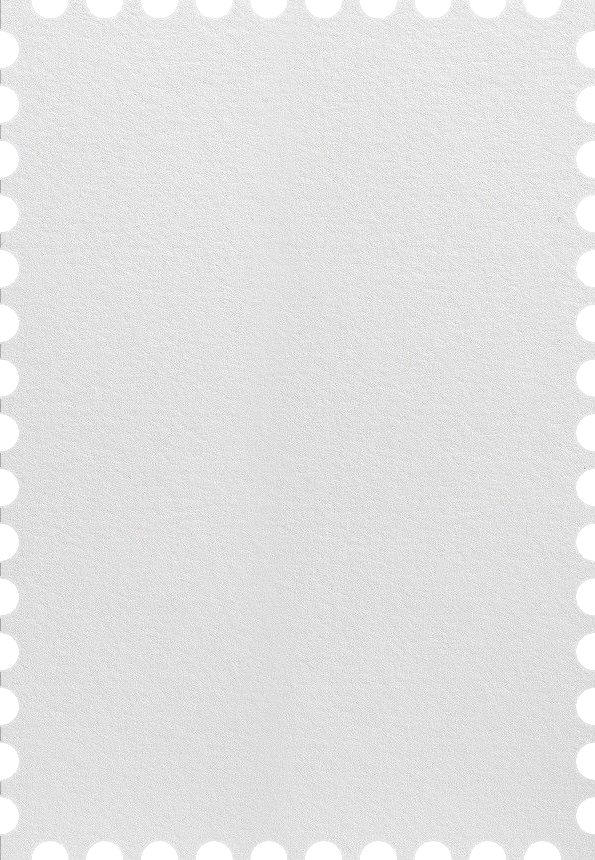
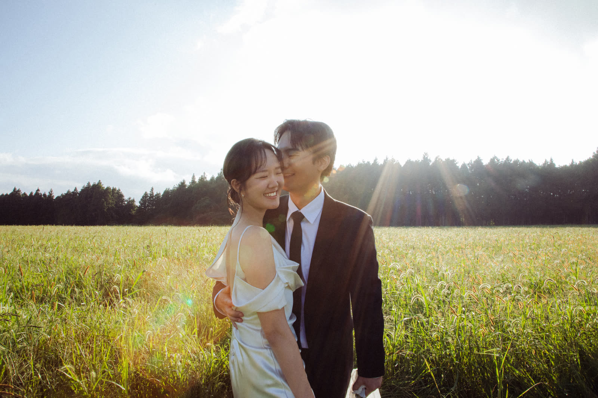
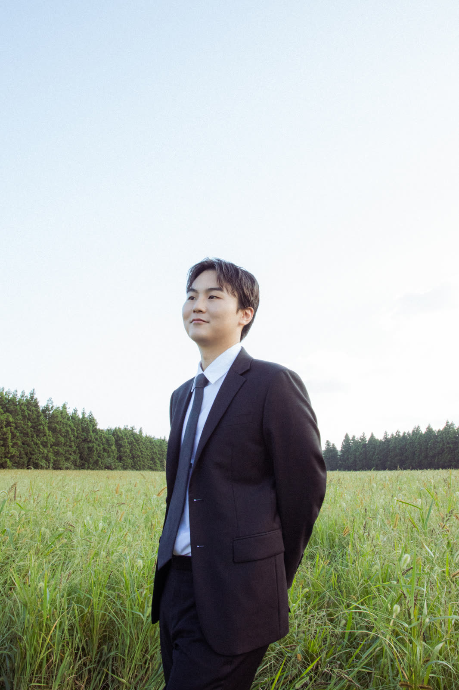
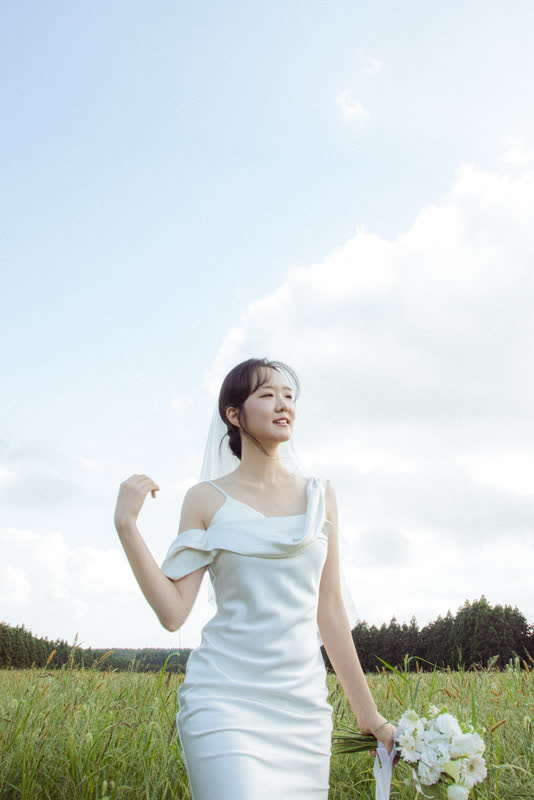
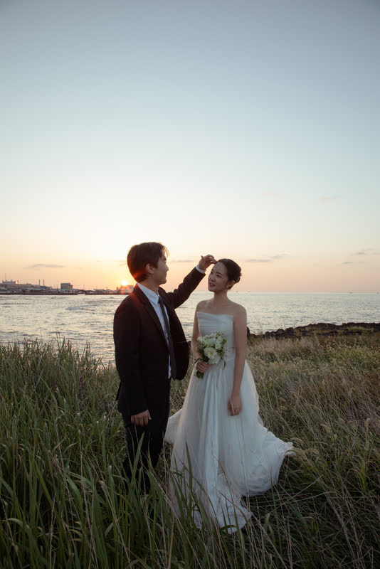
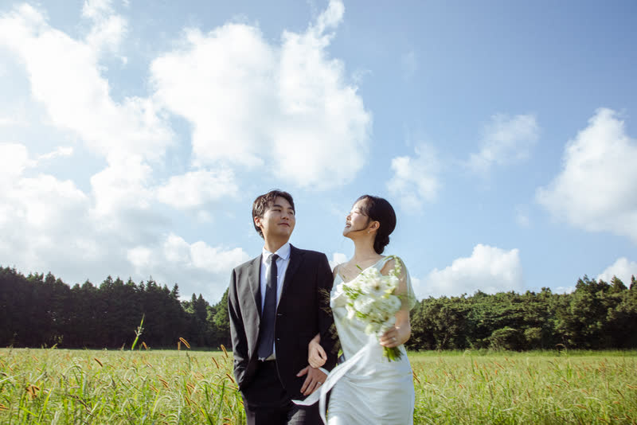
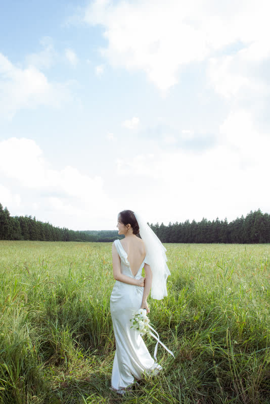

<meta charset="utf-8">
<meta name="viewport" content="width=device-width, initial-scale=1, viewport-fit=cover">
<title>진용·하림 청첩장</title>
<meta name="claude:viewport-fit-sides" content="cover">
<link rel="preconnect" href="https://fonts.googleapis.com">
<link rel="preconnect" href="https://fonts.gstatic.com" crossorigin>
<link href="https://fonts.googleapis.com/css2?family=Archivo:wght@500;700;800&family=Noto+Sans+KR:wght@400;500;700&display=swap" rel="stylesheet">
<style>
  /* SectionKit */
  /* Shared kit for every section after the cover (see docs/SectionsSpec.md, chapter 1).
     One flat printed look on white and black stock: no shadows, no blocks but the black paper, no borders
     but the outline pill's. Actions are pills; text that copies itself carries a crayon underline; a chosen
     word gets a crayon circle.
     Single look on purpose (a printed card), so it does not follow the system dark mode. */
  :root {
    color-scheme: light;
    --paper: #fbfbf8;
    --ink: #161616;
    --soft: #4d4d4a;
    --pencil: #3a3a37;
    /* Read from the cover's crayon drawing: first green leaf, first red bloom, ring gold. */
    --leaf: #2f7d4a;
    --bloom: #d8433b;
    --gold: #c9a24d;
    --latin: 'Archivo', 'Helvetica Neue', Arial, sans-serif;
    --korean: 'Noto Sans KR', 'Apple SD Gothic Neo', sans-serif;
    /* Letters on a filled pill: the opposite of the ink it is filled with. */
    --pill-text: var(--paper);

    /* Crayon marks as SVG backgrounds. Colors are literal (url() cannot read custom properties):
       pencil #3a3a37, bloom #d8433b, ink #161616. Two loose passes, stretched to the box. */
    --crayon-underline: url("data:image/svg+xml,%3Csvg xmlns='http://www.w3.org/2000/svg' viewBox='0 0 200 8' preserveAspectRatio='none'%3E%3Cpath d='M2 4.6C34 3.3 70 5.2 104 3.9S168 5 198 3.4' fill='none' stroke='%233a3a37' stroke-width='1.7' stroke-linecap='round' vector-effect='non-scaling-stroke'/%3E%3Cpath d='M5 5.7C48 4.8 96 6.5 140 5.1S186 6 196 5.1' fill='none' stroke='%233a3a37' stroke-width='1' stroke-linecap='round' opacity='.55' vector-effect='non-scaling-stroke'/%3E%3C/svg%3E");
    --crayon-underline-bloom: url("data:image/svg+xml,%3Csvg xmlns='http://www.w3.org/2000/svg' viewBox='0 0 200 8' preserveAspectRatio='none'%3E%3Cpath d='M2 4.6C34 3.3 70 5.2 104 3.9S168 5 198 3.4' fill='none' stroke='%23d8433b' stroke-width='2.2' stroke-linecap='round' vector-effect='non-scaling-stroke'/%3E%3Cpath d='M5 5.7C48 4.8 96 6.5 140 5.1S186 6 196 5.1' fill='none' stroke='%23d8433b' stroke-width='1.2' stroke-linecap='round' opacity='.6' vector-effect='non-scaling-stroke'/%3E%3C/svg%3E");
    --crayon-underline-ink: url("data:image/svg+xml,%3Csvg xmlns='http://www.w3.org/2000/svg' viewBox='0 0 200 8' preserveAspectRatio='none'%3E%3Cpath d='M2 4.6C34 3.3 70 5.2 104 3.9S168 5 198 3.4' fill='none' stroke='%23161616' stroke-width='2.3' stroke-linecap='round' vector-effect='non-scaling-stroke'/%3E%3Cpath d='M5 5.7C48 4.8 96 6.5 140 5.1S186 6 196 5.1' fill='none' stroke='%23161616' stroke-width='1.2' stroke-linecap='round' opacity='.6' vector-effect='non-scaling-stroke'/%3E%3C/svg%3E");
    /* A loop that does not quite close: it overshoots into the top, like a circle drawn in one go. */
    --crayon-circle: url("data:image/svg+xml,%3Csvg xmlns='http://www.w3.org/2000/svg' viewBox='0 0 120 50' preserveAspectRatio='none'%3E%3Cpath d='M22 9C48 1 98 2 113 15C123 25 110 43 72 46C38 49 6 42 5 27C4 14 22 7 46 6.5C60 6 72 7 82 9.5' fill='none' stroke='%23d8433b' stroke-width='1.8' stroke-linecap='round' stroke-linejoin='round' vector-effect='non-scaling-stroke'/%3E%3Cpath d='M30 6C70 2 112 8 115 24C117 38 88 47 58 46.5C26 46 8 37 9 24C10 13 30 6 54 5' fill='none' stroke='%23d8433b' stroke-width='1' stroke-linecap='round' opacity='.5' vector-effect='non-scaling-stroke'/%3E%3C/svg%3E");
  }

  body {
    /* Paper grain taken from the stamp paper (textures/paper.png: a seamless 400px tile shown at 200px,
       so it stays fine on high-density screens). The flat colour shows until it loads. */
    background: var(--paper) url("textures/paper.png") 0 0 / 200px 200px repeat;
    color: var(--ink);
    font-family: var(--korean);
  }

  [hidden] {
    display: none !important;
  }

  /* Off screen but still read by screen readers (legends, labels, the copy announcement). */
  .visually-hidden {
    position: absolute;
    width: 1px;
    height: 1px;
    margin: -1px;
    padding: 0;
    border: 0;
    overflow: hidden;
    clip-path: inset(50%);
    white-space: nowrap;
  }

  /* Section container: the cover's column, separated from its neighbours by space only. */
  .section {
    box-sizing: border-box;
    max-width: 440px;
    margin: 0 auto;
    padding-left: max(24px, env(safe-area-inset-left, 0px));
    padding-right: max(24px, env(safe-area-inset-right, 0px));
    padding-block: 48px 56px;
  }

  /* Black paper, as under the greeting: the colour runs edge to edge, the column stays 440px.
     Ink turns to paper, soft to a light grey, the crayon underline to paper, and pills to paper with ink letters.
     Only the underline is redrawn for dark paper, so toggles, choices and fields must not be used here. */
  .section--dark {
    --ink: var(--paper);
    --soft: #b9b9b4;
    --pill-text: #161616;
    --crayon-underline: url("data:image/svg+xml,%3Csvg xmlns='http://www.w3.org/2000/svg' viewBox='0 0 200 8' preserveAspectRatio='none'%3E%3Cpath d='M2 4.6C34 3.3 70 5.2 104 3.9S168 5 198 3.4' fill='none' stroke='%23fbfbf8' stroke-width='1.7' stroke-linecap='round' vector-effect='non-scaling-stroke'/%3E%3Cpath d='M5 5.7C48 4.8 96 6.5 140 5.1S186 6 196 5.1' fill='none' stroke='%23fbfbf8' stroke-width='1' stroke-linecap='round' opacity='.55' vector-effect='non-scaling-stroke'/%3E%3C/svg%3E");
    max-width: none;
    padding-left: max(24px, env(safe-area-inset-left, 0px), calc(50% - 196px));
    padding-right: max(24px, env(safe-area-inset-right, 0px), calc(50% - 196px));
    background: #000 url("textures/paper-black.png") 0 0 / 200px 200px repeat;
    color: var(--ink);
  }

  /* The one big size, as the ceremony's month: a place name or a number. */
  .lead {
    margin: 0;
    font-family: var(--latin), var(--korean);
    font-weight: 500;
    font-size: clamp(22px, 6.6vw, 26px);
    line-height: 1.3;
    letter-spacing: -0.02em;
    font-variant-numeric: tabular-nums;
  }

  /* Body sentences, centered like the greeting. */
  .prose {
    margin: 0;
    text-align: center;
    font-family: var(--korean);
    font-size: 15px;
    font-weight: 400;
    line-height: 1.95;
    letter-spacing: -0.01em;
    word-break: keep-all;
  }

  .label {
    font-size: 12px;
    color: var(--soft);
  }

  /* Actions (<a> or <button>): a filled ink pill with paper letters; on black paper the colours swap.
     .pill--line is the secondary action: an ink outline, no fill. */
  .pill {
    appearance: none;
    -webkit-appearance: none;
    display: inline-flex;
    align-items: center;
    justify-content: center;
    box-sizing: border-box;
    min-height: 46px;
    margin: 0;
    padding: 0 26px;
    border: 0;
    border-radius: 999px;
    background: var(--ink);
    color: var(--pill-text);
    font-family: var(--korean);
    font-size: 14.5px;
    font-weight: 500;
    line-height: 1;
    letter-spacing: -0.01em;
    white-space: nowrap;
    text-decoration: none;
    cursor: pointer;
    -webkit-tap-highlight-color: transparent;
  }

  .pill--line {
    min-height: 44px;
    padding: 0 18px;
    border: 1px solid var(--ink);
    background: transparent;
    color: var(--ink);
  }

  .pill:active {
    opacity: 0.85;
  }

  .pill:focus-visible {
    outline: 2px solid var(--ink);
    outline-offset: 3px;
  }

  .pill:disabled {
    opacity: 0.35;
    cursor: default;
  }

  /* Text that copies itself (<button>): plain text with a crayon underline right under the letters.
     The vertical padding makes a 44px target; the underline is positioned against the content box
     so it hugs the text, not the bottom of the target. */
  .crayon-link,
  .crayon-toggle {
    appearance: none;
    -webkit-appearance: none;
    display: inline-block;
    box-sizing: border-box;
    min-height: 44px;
    margin: 0;
    padding: 11px 1px;
    padding-block: max(8px, calc((44px - 1lh) / 2));
    border: 0;
    border-radius: 0;
    outline: none;
    color: inherit;
    font: inherit;
    letter-spacing: inherit;
    text-align: inherit;
    text-decoration: none;
    cursor: pointer;
    -webkit-tap-highlight-color: transparent;
    background-color: transparent;
    background-image: var(--crayon-underline);
    background-repeat: no-repeat;
    background-origin: content-box;
    background-clip: border-box;
    background-size: 100% 7px;
    background-position: left 0 bottom -6px;
  }

  .crayon-link:focus-visible,
  .crayon-toggle:focus-visible {
    background-image: var(--crayon-underline-bloom);
  }

  /* A toggle word: underlined while folded, circled while open (same mark as a chosen .choice). */
  .crayon-toggle {
    padding-inline: 14px;
  }

  .crayon-toggle[aria-expanded='true'] {
    background-image: var(--crayon-circle);
    background-origin: border-box;
    background-size: 100% 100%;
    background-position: center;
  }

  .crayon-toggle[aria-expanded='true']:focus-visible {
    background-image: var(--crayon-circle), var(--crayon-underline-bloom);
    background-origin: border-box, content-box;
    background-size: 100% 100%, 100% 7px;
    background-position: center, left 0 bottom -6px;
  }

  /* One option: <label class="choice"><input type="radio"><span class="choice__text">word</span></label>.
     The radio stays in the accessibility tree and keyboard order, only visually hidden. */
  .choice {
    position: relative;
    display: inline-flex;
    align-items: center;
    min-height: 44px;
    cursor: pointer;
    -webkit-tap-highlight-color: transparent;
  }

  .choice input {
    position: absolute;
    width: 1px;
    height: 1px;
    margin: 0;
    padding: 0;
    overflow: hidden;
    clip-path: inset(50%);
    white-space: nowrap;
    opacity: 0;
  }

  /* Unchosen words carry the pencil underline like a folded .crayon-toggle, so they read as tappable;
     the chosen word trades it for the circle. Keyboard focus turns the underline red. */
  .choice__text {
    display: inline-block;
    padding: 7px 14px;
    line-height: 1.5;
    background-image: var(--crayon-underline);
    background-repeat: no-repeat;
    background-origin: content-box;
    background-size: 100% 7px;
    background-position: left 0 bottom -5px;
  }

  .choice input:focus-visible + .choice__text {
    background-image: var(--crayon-underline-bloom);
  }

  .choice input:checked + .choice__text {
    background-image: var(--crayon-circle);
    background-origin: padding-box;
    background-size: 100% 100%;
    background-position: center;
  }

  .choice input:checked:focus-visible + .choice__text {
    background-image: var(--crayon-circle), var(--crayon-underline-bloom);
    background-origin: padding-box, content-box;
    background-size: 100% 100%, 100% 7px;
    background-position: center, left 0 bottom -5px;
  }

  /* One-line input: no box, only a crayon line to write on. 16px or more keeps iOS from zooming. */
  .field {
    appearance: none;
    -webkit-appearance: none;
    display: block;
    box-sizing: border-box;
    width: 100%;
    min-height: 44px;
    margin: 0;
    padding: 10px 2px 12px;
    border: 0;
    border-radius: 0;
    outline: none;
    color: var(--ink);
    font: inherit;
    font-size: max(16px, 1em);
    letter-spacing: inherit;
    background-color: transparent;
    background-image: var(--crayon-underline);
    background-repeat: no-repeat;
    background-size: 100% 7px;
    background-position: left 0 bottom 3px;
  }

  .field::placeholder {
    color: var(--soft);
    opacity: 0.7;
  }

  .field:focus-visible {
    background-image: var(--crayon-underline-ink);
  }

  .field[aria-invalid='true'] {
    background-image: var(--crayon-underline-bloom);
  }

  /* Detail sections: directions, gift and RSVP follow the ceremony (docs/SectionsSpec.md 1-1): one centred
     column under one Korean title, 15px lines, 12px soft labels. The closing (stamp, no title)
     only borrows the prose and spacing. */
  .section--detail {
    padding-block: 88px;
    text-align: center;
  }

  .section--detail .section-title {
    margin: 0 0 36px;
    font-family: var(--latin), var(--korean);
    font-weight: 500;
    font-size: clamp(28px, 8.5vw, 33px);
    line-height: 1.2;
    letter-spacing: -0.035em;
    text-align: center;
    word-break: keep-all;
  }

  .section--detail .prose {
    font-size: 15px;
    line-height: 1.95;
    color: var(--soft);
  }

  /* Layout: one white sheet; a left-aligned sentence headline, a crayon greenhouse that fills with plants, big date numerals.
     Single look on purpose (a printed card on white stock), so no dark theme. */
  /* Stand-ins while the web fonts load: system faces scaled to the widths and line metrics of Archivo 500 and
     Noto Sans KR, so the cover's lines keep their length and place when the real fonts swap in. Each one only
     applies where its system font exists (Helvetica Neue on iPhone and Mac, Roboto on Android, Apple SD Gothic Neo
     on iPhone and Mac); browsers without size-adjust or the overrides simply get the plain system font as before. */
  @font-face {
    font-family: 'Archivo Fallback Helvetica';
    src: local('Helvetica Neue Medium'), local('HelveticaNeue-Medium');
    font-weight: 500;
    size-adjust: 101.9%;
    ascent-override: 86.4%;
    descent-override: 20.6%;
    line-gap-override: 0%;
  }

  /* The word space is much wider in the system faces than in Archivo, so it gets its own scale (a later face wins
     for the characters in its unicode-range). */
  @font-face {
    font-family: 'Archivo Fallback Helvetica';
    src: local('Helvetica Neue Medium'), local('HelveticaNeue-Medium');
    font-weight: 500;
    unicode-range: U+20;
    size-adjust: 63.5%;
    ascent-override: 138.6%;
    descent-override: 33.1%;
    line-gap-override: 0%;
  }

  @font-face {
    font-family: 'Archivo Fallback Roboto';
    src: local('Roboto Medium'), local('Roboto-Medium');
    font-weight: 500;
    size-adjust: 104.3%;
    ascent-override: 84.4%;
    descent-override: 20.1%;
    line-gap-override: 0%;
  }

  @font-face {
    font-family: 'Archivo Fallback Roboto';
    src: local('Roboto Medium'), local('Roboto-Medium');
    font-weight: 500;
    unicode-range: U+20;
    size-adjust: 70%;
    ascent-override: 125.7%;
    descent-override: 30%;
    line-gap-override: 0%;
  }

  @font-face {
    font-family: 'Noto Sans KR Fallback';
    src: local('Apple SD Gothic Neo Regular'), local('AppleSDGothicNeo-Regular');
    font-weight: 400;
    size-adjust: 106.4%;
    ascent-override: 109%;
    descent-override: 27.3%;
    line-gap-override: 0%;
  }

  @font-face {
    font-family: 'Noto Sans KR Fallback';
    src: local('Apple SD Gothic Neo Medium'), local('AppleSDGothicNeo-Medium');
    font-weight: 500;
    size-adjust: 106.4%;
    ascent-override: 109%;
    descent-override: 27.3%;
    line-gap-override: 0%;
  }

  @font-face {
    font-family: 'Noto Sans KR Fallback';
    src: local('Apple SD Gothic Neo Bold'), local('AppleSDGothicNeo-Bold');
    font-weight: 700;
    size-adjust: 106.4%;
    ascent-override: 109%;
    descent-override: 27.3%;
    line-gap-override: 0%;
  }

  :root {
    color-scheme: light;
    --paper: #fbfbf8;
    --ink: #161616;
    --soft: #4d4d4a;
    --latin: 'Archivo', 'Archivo Fallback Helvetica', 'Archivo Fallback Roboto', 'Helvetica Neue', Arial, sans-serif;
    --korean: 'Noto Sans KR', 'Noto Sans KR Fallback', 'Apple SD Gothic Neo', sans-serif;
  }

  body {
    /* Paper grain taken from the stamp paper (textures/paper.png: a seamless 400px tile shown at 200px,
       so it stays fine on high-density screens). The flat colour shows until it loads. */
    background: var(--paper) url("textures/paper.png") 0 0 / 200px 200px repeat;
    color: var(--ink);
    font-family: var(--korean);
  }

  .card {
    min-height: 100vh;
    min-height: 100svh;
    box-sizing: border-box;
    max-width: 440px;
    margin: 0 auto;
    padding-left: max(24px, env(safe-area-inset-left, 0px));
    padding-right: max(24px, env(safe-area-inset-right, 0px));
    padding-block: 44px 40px;
    display: flex;
    flex-direction: column;
    position: relative;
  }

  /* Live weather layer: drawn over the greenhouse, under the title and the date. */
  .weather {
    position: absolute;
    inset: 0;
    width: 100%;
    height: 100%;
    pointer-events: none;
    z-index: 2;
    /* Hidden until the greenhouse intro starts, then a soft fade in (data-weather="on", set by the weather script). */
    opacity: 0;
    transition: opacity 600ms ease-out;
  }

  .weather[data-weather="on"] {
    opacity: 1;
  }

  @media (prefers-reduced-motion: reduce) {
    .weather {
      transition: none;
    }
  }

  .card > .house {
    position: relative;
    z-index: 1;
  }

  .card > .title,
  .card > .details {
    position: relative;
    z-index: 3;
  }

  /* Title: two lines around a shared center: rings on the first, the ampersand on the second. */
  .title {
    margin: 0;
    display: grid;
    grid-template-columns: minmax(0, 1fr) auto minmax(0, 1fr);
    align-items: center;
    column-gap: 0.28em;
    font-family: var(--latin);
    font-weight: 500;
    /* Two of the widest side words (INVITATION) plus the middle column come to about 12.6em. */
    font-size: clamp(20px, calc((100vw - 48px) / 12.6), 33px);
    line-height: 1.18;
    letter-spacing: -0.035em;
  }

  .glyph {
    display: inline-block;
    width: 1.25em;
    height: 0.95em;
    margin: 0 0.04em;
    vertical-align: -0.12em;
  }

  .glyph--wide {
    width: 1.6em;
  }


  /* Three columns across the full width: outer words sit flush against the left and right edges,
     so both lines share the same edges, and the rings and the ampersand share the center axis. */
  .title__left,
  .title__right,
  .title__mid {
    white-space: nowrap;
  }

  .title__left {
    justify-self: start;
  }

  .title__right {
    justify-self: end;
  }

  .title__mid {
    justify-self: center;
  }

  /* First line spans all three columns, centered on the same axis as the rings. */
  .title__head {
    grid-column: 1 / -1;
    justify-self: center;
    white-space: nowrap;
  }

  /* Names are set smaller than the title so the second line reads as a caption under it. */
  .title__names {
    margin-top: 0.5em;
    font-size: 0.68em;
    letter-spacing: -0.02em;
  }

  /* Pull the two names in toward the rings, by the same amount on each side, so the row ends
     where WEDDING INVITATION ends. */
  .title__left.title__names {
    margin-left: 1.5em;
  }

  .title__right.title__names {
    margin-right: 1.5em;
  }

  /* Each name is a small stack: the English name with its Korean name centered beneath it. */
  .name {
    display: inline-grid;
    justify-items: center;
  }

  .name__ko {
    margin-top: 0.5em;
    font-family: var(--korean);
    font-size: 0.62em;
    font-weight: 500;
    letter-spacing: 0;
    color: var(--soft);
  }

  /* The rings sit at the vertical middle of the English and Korean names together. */
  .title__amp {
    align-self: center;
    width: 1.85em;
    height: 1.41em;
  }

  /* Rings with a soft twinkle: two four-point glints over the stone and the right ring. */
  .ring {
    position: relative;
    display: block;
  }

  .ring__art {
    display: block;
    width: 100%;
    height: 100%;
    margin: 0;
  }

  .ring__spark {
    position: absolute;
    left: 30%;
    top: 4%;
    width: 0.62em;
    height: 0.62em;
    /* Gold glint with a bright core, so it shows on the white paper. */
    background: radial-gradient(circle, #fffbe6 0 14%, #f3cf62 30%, #d4a23a 52%, rgba(212, 162, 58, 0) 74%);
    clip-path: polygon(50% 0, 60% 40%, 100% 50%, 60% 60%, 50% 100%, 40% 60%, 0 50%, 40% 40%);
    opacity: 0.85;
    pointer-events: none;
  }

  .ring__spark--small {
    left: 74%;
    top: 34%;
    width: 0.42em;
    height: 0.42em;
    opacity: 0.75;
  }

  @media (prefers-reduced-motion: no-preference) {
    .ring__spark {
      animation: twinkle 2.6s ease-in-out infinite;
    }

    .ring__spark--small {
      animation-delay: 1.3s;
    }
  }

  @keyframes twinkle {
    0%, 100% {
      opacity: 0;
      transform: scale(0.3) rotate(0deg);
    }

    45% {
      opacity: 1;
      transform: scale(1) rotate(25deg);
    }

    70% {
      opacity: 0;
      transform: scale(0.5) rotate(45deg);
    }
  }


  .house {
    flex: 1;
    min-height: 300px;
    display: grid;
    place-items: center;
    margin-block: 14px;
  }

  .house canvas {
    display: block;
    width: min(100%, 350px);
    max-width: 100%;
    aspect-ratio: 1 / 1.02;
    cursor: pointer;
  }

  /* The date is the second big moment: large numerals on the left, the rest set small beside them. */
  .details {
    display: flex;
    align-items: flex-end;
    justify-content: space-between;
    gap: 16px;
  }

  /* The year over the day, both the same size and weight in the title's face. */
  .details__date {
    margin: 0;
    font-family: var(--latin);
    font-weight: 500;
    font-size: clamp(22px, 6.4vw, 26px);
    line-height: 1.08;
    letter-spacing: -0.02em;
    font-variant-numeric: tabular-nums;
  }

  /* Time and place match the date's face and weight, a step smaller so the date leads. */
  .details__rest {
    margin: 0;
    text-align: right;
    font-family: var(--latin), var(--korean);
    font-size: clamp(18px, 5.2vw, 21px);
    line-height: 1.25;
    font-weight: 500;
    letter-spacing: -0.02em;
  }

  .details__rest span {
    display: block;
  }

  /* Greeting: the one section on black (the user's request), no title. One postage stamp, the stamp paper
     the user supplied with two colour photos set in it one above the other (the same two photos and framing as
     the printed invitation cover: photo-12 on top, photo-04 below), then the greeting in paper-coloured type.
     Every rule sits under .greeting so the black and the light type stay in this section of the merged page. */

  /* Full width black: the column stays 440px like every section (the padding grows on wide screens), but the
     black runs edge to edge, so on a desktop it reads as a band across the paper page, not a black card.
     Its top and bottom edges are plain straight cuts against the paper sections above and below. */
  .greeting {
    max-width: none;
    padding-left: max(24px, env(safe-area-inset-left, 0px), calc(50% - 196px));
    padding-right: max(24px, env(safe-area-inset-right, 0px), calc(50% - 196px));
    padding-block: 72px 80px;
    /* The same stamp-paper grain as the rest of the page, made black (textures/paper-black.png: a seamless
       400px tile shown at 200px). Plain black shows until it loads. */
    background: #000 url("textures/paper-black.png") 0 0 / 200px 200px repeat;
    color: var(--paper);
  }

  /* The stamp: about a quarter of the screen (100px at 390px). Sized by its aspect ratio before the images arrive.
     textures/stamp-frame.png is 595 x 860, cropped to the paper (teeth included), transparent outside the cut. */
  .greeting__stamp {
    position: relative;
    width: clamp(86px, 25.6vw, 112px);
    aspect-ratio: 595 / 860;
    margin: 0 auto;
  }

  .greeting__frame {
    display: block;
    width: 100%;
    height: 100%;
  }

  /* The photo window: 62px in from every edge of the 595 x 860 paper (the teeth reach 18-19px in, so about
     43px of white paper, 7% of the width, shows past the deepest hole), split into two equal cells stacked one
     above the other, as on the printed invitation cover: 471 x 361 each, with a 14px strip of paper (2.4% of the
     width, much narrower than the outer margin) between them. Paper px: top cell y 62-423, bottom cell y 437-798.
     All in %, so it holds at every size: top/height are % of the stamp's height, left/width % of its width. */
  .greeting__cell {
    position: absolute;
    left: 10.420%;
    display: block;
    width: 79.160%;
    height: 41.977%;
    overflow: hidden;
  }

  .greeting__cell--top {
    top: 7.209%;
  }

  .greeting__cell--bottom {
    top: 50.814%;
  }

  /* Each photo (1600 x 1066) is cropped to the cover's framing: scaled by its width (% of the cell, so % of the
     paper width) and shifted by left/top (% of the cell's width/height). Height follows the photo's own ratio.
     The crop is 1.305:1, the cell's ratio, so the photo always fills the cell exactly. */
  .greeting__photo {
    position: absolute;
    display: block;
    max-width: none;
    height: auto;
    object-fit: cover;
  }

  /* photo-12, source x 520-1060, y 294-708: the groom's cheek against the laughing bride's, heads to collars,
     a little backlit sky above. */
  .greeting__cell--top .greeting__photo {
    top: -71.033%;
    left: -96.296%;
    width: 296.296%;
  }

  /* photo-04, source x 510-1090, y 430-874: side by side under the blue sky, heads to the bouquet, the bride
     looking up at the groom. */
  .greeting__cell--bottom .greeting__photo {
    top: -96.729%;
    left: -87.931%;
    width: 275.862%;
  }

  .greeting__note {
    margin-top: 52px;
    color: var(--paper);
  }

  /* Families: right after the greeting, the layout of the user's reference image: each family's parents,
     then the relation and name, then one plain photo. No letters, stickers or cut-outs from that reference. */

  .families {
    padding-block: 96px 104px;
    text-align: center;
  }

  .families__family + .families__family {
    margin-top: 104px;
  }

  .families__parents {
    margin: 0;
    color: var(--soft);
    font-family: var(--korean);
    font-size: 15px;
    line-height: 1.6;
    letter-spacing: -0.01em;
  }

  .families__name {
    margin: 2px 0 0;
    color: var(--ink);
    font-family: var(--korean);
    font-size: clamp(18px, 5.2vw, 21px);
    font-weight: 500;
    line-height: 1.5;
    letter-spacing: -0.02em;
  }

  /* One photo, no frame or shadow. photo-10 and photo-09, kept by the couple. */
  .families__photo {
    display: block;
    width: min(78%, 300px);
    height: auto;
    aspect-ratio: 3 / 4;
    margin: 28px auto 0;
    object-fit: cover;
    background: #d9d6cf;
  }

  /* Photos: a scrapbook page (the user's reference): photos of clearly different sizes scattered unevenly on
     the paper, one big landscape hero in the middle, smaller ones staggered left and right above and below it,
     all kept inside the screen so every crayon frame shows whole. Each photo is outlined by a hand-drawn crayon rectangle (the cover's greenhouse frame color, two loose passes),
     no shadow, no rotation. Photos only: no words.

     Every place is in cqw (1% of the section's width), so the page scales as one piece from 375px to 440px.
     Each photo carries its slot inline: --x / --y (top-left corner), --w (width) and --r (aspect ratio). */
  .photos--scrap {
    box-sizing: border-box;
    max-width: 440px;
    margin: 0 auto;
    padding: 24px 0 56px;
    overflow: hidden;
    overflow: clip;
    container-type: inline-size;
  }

  .scrap__page {
    position: relative;
    width: 100%;
    height: calc(min(100vw, 440px) * 4.56);
    height: 456cqw;
  }

  .scrap__photo {
    appearance: none;
    -webkit-appearance: none;
    position: absolute;
    left: calc(var(--x) * 1cqw);
    top: calc(var(--y) * 1cqw);
    display: block;
    box-sizing: border-box;
    width: calc(var(--w) * 1cqw);
    aspect-ratio: var(--r);
    margin: 0;
    padding: 0;
    border: 0;
    border-radius: 0;
    background: #d9d6cf;
    cursor: zoom-in;
    -webkit-tap-highlight-color: transparent;
  }

  /* Crayon frame: a wobbly rectangle drawn over the photo's edge, stretched to the photo (non-scaling stroke).
     Four drawings cycle so no two neighbours look stamped. Colors are literal: url() cannot read custom properties
     (#7f8b8a is the cover's FRAME_COLOR). */
  .scrap__page {
  --scrap-frame-1: url("data:image/svg+xml,%3Csvg xmlns='http://www.w3.org/2000/svg' viewBox='0 0 100 100' preserveAspectRatio='none'%3E%3Cpath d='M1.7 1.7C33.7 2.5 65.4 1.2 100.2 1.9M97.7 0.2C98.5 33.7 97.3 65.4 98.1 99.4M98.1 98.1C66.3 98.5 34.6 98 0.4 98.1M1.7 98.5C2.6 66.3 2.3 34.6 1.7 1' fill='none' stroke='%237f8b8a' stroke-width='2.6' stroke-linecap='round' vector-effect='non-scaling-stroke'/%3E%3Cpath d='M2.3 2C34.2 3.1 65.6 2.2 98.7 2.7M98.4 1.6C97.3 34.2 97.2 65.6 97.9 99.1M98.3 97.6C66.1 97.6 34.5 98.3 0.2 98.1M2.5 98.6C3 66.2 3.2 34.8 2.9 1.7' fill='none' stroke='%237f8b8a' stroke-width='1.2' stroke-linecap='round' opacity='.5' vector-effect='non-scaling-stroke'/%3E%3C/svg%3E");
  --scrap-frame-2: url("data:image/svg+xml,%3Csvg xmlns='http://www.w3.org/2000/svg' viewBox='0 0 100 100' preserveAspectRatio='none'%3E%3Cpath d='M1.5 2.2C33.7 1.5 65.4 1.9 100.4 1.7M98.4 1C98.9 33.7 98.2 65.4 98.5 99.5M98.8 97.4C66.3 97.7 34.6 97.7 1.3 97.9M2.5 99.1C2.8 66.3 1.4 34.6 1.6 0.2' fill='none' stroke='%237f8b8a' stroke-width='2.6' stroke-linecap='round' vector-effect='non-scaling-stroke'/%3E%3Cpath d='M1.8 2.4C34.2 2.6 65.6 3.2 99.6 2.9M98.5 2.6C97 34.2 97.5 65.6 97.4 99.1M97.9 98.5C66 97.9 34.5 97.1 1.5 97.9M2 98.7C3.2 66.2 3.1 34.8 2.8 0.6' fill='none' stroke='%237f8b8a' stroke-width='1.2' stroke-linecap='round' opacity='.5' vector-effect='non-scaling-stroke'/%3E%3C/svg%3E");
  --scrap-frame-3: url("data:image/svg+xml,%3Csvg xmlns='http://www.w3.org/2000/svg' viewBox='0 0 100 100' preserveAspectRatio='none'%3E%3Cpath d='M-0.1 1.6C33.7 2.3 65.4 2.9 98.5 1.4M97.8 1.5C97.4 33.7 97.5 65.4 98.3 99.2M100 98.1C66.3 98.3 34.6 97.2 0.5 98.5M2.4 99.4C1.1 66.3 1.4 34.6 2 0.7' fill='none' stroke='%237f8b8a' stroke-width='2.6' stroke-linecap='round' vector-effect='non-scaling-stroke'/%3E%3Cpath d='M2.4 2C34.2 2.5 65.6 2.2 99.8 2.8M97.8 1.3C98.3 34.2 97.3 65.6 97.2 99.1M98 97.6C66 97 34.5 97.3 0.1 97.8M2 98.8C1.6 66.2 3.3 34.8 2.9 0.7' fill='none' stroke='%237f8b8a' stroke-width='1.2' stroke-linecap='round' opacity='.5' vector-effect='non-scaling-stroke'/%3E%3C/svg%3E");
  --scrap-frame-4: url("data:image/svg+xml,%3Csvg xmlns='http://www.w3.org/2000/svg' viewBox='0 0 100 100' preserveAspectRatio='none'%3E%3Cpath d='M-0.1 2.6C33.7 1.7 65.4 1.5 98.8 1.5M97.9 -0.1C97.6 33.7 97.3 65.4 97.8 99.1M98.7 97.9C66.3 97.9 34.6 97.8 1.1 97.7M1.8 98.6C1.4 66.3 2.3 34.6 2.5 -0.4' fill='none' stroke='%237f8b8a' stroke-width='2.6' stroke-linecap='round' vector-effect='non-scaling-stroke'/%3E%3Cpath d='M2 2.1C34.2 3.3 65.6 2.3 100.4 3M98.5 1.9C97.3 34.2 97.2 65.6 97.2 99.7M98.4 97.4C66.1 98 34.5 98.3 0.6 98.1M2.1 98.6C1.4 66.2 3.1 34.8 2.4 1.8' fill='none' stroke='%237f8b8a' stroke-width='1.2' stroke-linecap='round' opacity='.5' vector-effect='non-scaling-stroke'/%3E%3C/svg%3E");
  }

  .scrap__photo::after {
    content: '';
    position: absolute;
    inset: -3px;
    background: var(--scrap-frame-1) center / 100% 100% no-repeat;
    pointer-events: none;
  }

  .scrap__photo:nth-of-type(4n + 2)::after {
    background-image: var(--scrap-frame-2);
  }

  .scrap__photo:nth-of-type(4n + 3)::after {
    background-image: var(--scrap-frame-3);
  }

  .scrap__photo:nth-of-type(4n)::after {
    background-image: var(--scrap-frame-4);
  }

  .scrap__photo img {
    display: block;
    width: 100%;
    height: 100%;
    object-fit: cover;
    object-position: var(--pos, 50% 50%);
  }

  /* Keyboard focus: a plain pencil line around the photo (no shadow). */
  .scrap__photo:focus {
    outline: none;
  }

  .scrap__photo:focus-visible {
    outline: 2px solid var(--pencil);
    outline-offset: 2px;
  }

  /* Full view: the same paper covers the screen and the one photo sits on it whole. No dark backdrop.
     Tap anywhere, press Esc or go back to put it away. */
  /* --viewer-h is the screen height: 100vh where svh is unknown, the small viewport height where it is
     (a custom property holding 100svh is never invalid at parse time, so it needs @supports, not a fallback line). */
  .scrap__viewer {
    --viewer-h: 100vh;
    position: fixed;
    inset: 0;
    z-index: 100;
    display: grid;
    place-items: center;
    overscroll-behavior: contain;
    background: var(--paper) url("textures/paper.png") 0 0 / 200px 200px repeat;
  }

  @supports (height: 100svh) {
    .scrap__viewer {
      --viewer-h: 100svh;
    }
  }

  /* The small copy shows through as the background until the original has loaded over it. */
  .scrap__viewer-image {
    display: block;
    width: min(
      calc(100vw - 2 * max(24px, env(safe-area-inset-left, 0px))),
      calc((var(--viewer-h) - 2 * max(40px, env(safe-area-inset-top, 0px))) * var(--viewer-ratio, 1)),
      760px
    );
    height: auto;
    aspect-ratio: var(--viewer-ratio, 1);
    background-size: 100% 100%;
    pointer-events: none;
  }

  .scrap__viewer-close {
    appearance: none;
    position: absolute;
    inset: 0;
    z-index: 1;
    width: 100%;
    height: 100%;
    margin: 0;
    padding: 0;
    border: 0;
    background: transparent;
    cursor: zoom-out;
    -webkit-tap-highlight-color: transparent;
    outline: none;
  }

  @media (prefers-reduced-motion: no-preference) {
    .scrap__viewer:not([hidden]) {
      animation: scrap-viewer-in 180ms ease-out;
    }

    @keyframes scrap-viewer-in {
      from {
        opacity: 0;
      }
    }
  }

  /* Ceremony: laid out like the user's reference page. White paper, one centred column, no title:
     the date line and place open the section, then the month over a crayon line, the day circled
     in crayon, a countdown, then the calendar link (the kit's pill). The families are in the section after the greeting. */

  .ceremony {
    padding-block: 88px;
    text-align: center;
    font-family: var(--korean);
    font-size: 15px;
    font-weight: 400;
    line-height: 1.95;
    letter-spacing: -0.01em;
  }

  .ceremony p {
    margin: 0;
  }

  .ceremony .ceremony__when {
    font-family: var(--latin), var(--korean);
    font-size: 15px;
    font-weight: 500;
    font-variant-numeric: tabular-nums;
    letter-spacing: 0.02em;
    line-height: 1.6;
  }

  .ceremony__place {
    color: var(--soft);
    font-family: var(--korean);
    line-height: 1.6;
  }

  /* The month sits on the only rule in the section: a crayon line as wide as the grid. */
  .ceremony .calendar__month {
    max-width: 301px;
    margin: 50px auto 0;
    padding-bottom: 12px;
    background: var(--crayon-underline-ink) bottom center / 100% 8px no-repeat;
    font-family: var(--latin), var(--korean);
    font-size: clamp(22px, 6.6vw, 26px);
    font-weight: 500;
    line-height: 1.3;
    letter-spacing: -0.02em;
    font-variant-numeric: tabular-nums;
  }

  /* Numbers on paper: no table, no rules. */
  .calendar__grid {
    display: grid;
    grid-template-columns: repeat(7, minmax(0, 1fr));
    row-gap: 4px;
    max-width: 301px;
    margin: 16px auto 18px;
    font-family: var(--latin), var(--korean);
    font-variant-numeric: tabular-nums;
  }

  .calendar__weekday {
    color: var(--soft);
    font-family: var(--latin);
    font-size: 12px;
    line-height: 28px;
  }

  .calendar__day {
    font-size: 14px;
    font-weight: 500;
    line-height: 36px;
  }

  /* 1 March 2027 is a Monday, the second column. */
  .calendar__day--first {
    grid-column-start: 2;
  }

  .calendar__day--wedding {
    background: var(--crayon-circle) center / min(100%, 42px) 34px no-repeat;
  }

  /* Time left: four units in one row, separators level with the numbers. Hidden until the script runs. */
  .countdown {
    display: inline-flex;
    align-items: flex-start;
    justify-content: center;
    gap: 8px;
    margin-top: 22px;
    font-family: var(--latin), var(--korean);
  }

  .countdown[hidden] {
    display: none;
  }

  .countdown__unit {
    display: flex;
    flex-direction: column;
    align-items: center;
    min-width: 44px;
  }

  .countdown__value,
  .countdown__sep {
    font-size: 22px;
    font-weight: 500;
    line-height: 1.3;
    font-variant-numeric: tabular-nums;
  }

  .countdown__sep {
    color: var(--soft);
  }

  .countdown__label {
    color: var(--soft);
    font-size: 11px;
    line-height: 1.6;
    letter-spacing: 0.12em;
  }

  .calendar .calendar__add {
    margin-top: 28px;
  }

  /* Directions: laid out like the ceremony (tokens, title, pills and the copy word come from the section kit).
     One centred column: a still Naver map with one pin on the venue (its script loads only near the viewport),
     the place, the address that copies itself, three map apps as outline pills, then the transit notes. */

  /* Same size before and after the map loads, so nothing below moves; hidden if the map cannot load. */
  .directions__map {
    display: block;
    width: 100%;
    aspect-ratio: 4 / 3;
    margin: 0 0 28px;
    border: 0;
    background: color-mix(in srgb, var(--ink) 5%, transparent);
  }

  .directions__map[hidden] {
    display: none;
  }

  /* One line that copies itself. 복사했어요 is shorter and stays on the same line, so nothing below moves. */
  .directions__address {
    margin: 2px 0 0;
    font-size: 15px;
    letter-spacing: -0.01em;
  }

  .directions__address .crayon-link {
    white-space: nowrap;
  }

  /* Three outline pills on one row. Narrower sides than the kit's so all three fit 272px at 320px wide;
     on a computer the TMAP item is hidden (see the script) and the other two stay centred. */
  .directions__maps {
    margin: 20px 0 0;
    padding: 0;
    list-style: none;
    display: flex;
    flex-wrap: wrap;
    justify-content: center;
    gap: 8px;
  }

  .directions__maps .pill {
    padding-inline: 14px;
  }

  /* Transit notes: a small soft name, its sentence right under it, space between items and nothing else. */
  .directions__transit {
    margin: 48px 0 0;
    display: grid;
    row-gap: 24px;
  }

  .directions__item {
    margin: 0;
  }

  .directions__item .label {
    display: block;
    line-height: 1.6;
  }

  .directions__item .prose {
    display: block;
    color: var(--ink);
  }

  /* Gift: laid out like the ceremony (tokens, title, toggles and copy words come from the section kit).
     One sentence, then 신랑측 and 신부측 side by side on the centre axis; each opens its accounts below. */

  .gift__toggles {
    margin: 24px 0 0;
    display: flex;
    justify-content: center;
    gap: 28px;
    font-size: 15px;
    letter-spacing: -0.01em;
  }

  .gift__panel {
    margin-top: 18px;
  }

  .gift__accounts {
    margin: 0;
    padding: 0;
    list-style: none;
  }

  .gift__account {
    display: flex;
    flex-direction: column;
    align-items: center;
  }

  .gift__account + .gift__account {
    margin-top: 12px;
  }

  .gift__account .label {
    line-height: 1.6;
  }

  /* The number line is one tap target; it never wraps, so a number is always read in one piece. */
  .gift__number {
    font-size: 15px;
    letter-spacing: -0.01em;
    white-space: nowrap;
    font-variant-numeric: tabular-nums;
  }

  /* Without the script both sides stay open (the markup ships unfolded so the accounts are never lost).
     The words do nothing then, so they read as plain headings: no circle, no underline. */
  .gift:not([data-gift-ready]) .crayon-toggle {
    background-image: none;
    cursor: default;
  }

  /* Opening is shown by the crayon circle; the accounts only fade in a little, and only for those who allow motion. */
  @media (prefers-reduced-motion: no-preference) {
    .gift__panel:not([hidden]) {
      animation: gift-unfold 320ms ease-out;
    }
  }

  @keyframes gift-unfold {
    from {
      opacity: 0;
      transform: translateY(-4px);
    }

    to {
      opacity: 1;
      transform: none;
    }
  }

  /* RSVP: laid out like the ceremony (tokens, title, choices, the field and the pill come from the section kit).
     One question per row, its words side by side on the centre axis: no boxes, no numbers, no visible question labels. */

  .rsvp__form {
    margin: 0;
  }

  /* A fieldset only groups the words for assistive tech; it draws nothing on the paper. */
  .rsvp__row {
    min-width: 0;
    margin: 0;
    padding: 0;
    border: 0;
  }

  .rsvp__row + .rsvp__row,
  .rsvp__name,
  .rsvp__attending {
    margin-top: 18px;
  }

  .rsvp__attending .rsvp__row:first-child {
    margin-top: 0;
  }

  .rsvp__attending .rsvp__row + .rsvp__row {
    margin-top: 18px;
  }

  /* Two words of one question, side by side; the circle's padding keeps their marks apart. */
  .rsvp__options {
    display: flex;
    flex-wrap: wrap;
    justify-content: center;
    gap: 0 28px;
    font-size: 15px;
    letter-spacing: -0.01em;
  }

  /* An unanswered question: the pencil underline both words already carry turns red,
     instead of an error sentence. */
  .rsvp__row[data-missing] .choice__text {
    background-image: var(--crayon-underline-bloom);
  }

  .rsvp__name .field {
    font-family: var(--korean);
    letter-spacing: -0.01em;
    text-align: center;
  }

  /* Head count: a small soft label over the number at the big size between two bare signs. */
  .rsvp__guests {
    display: flex;
    flex-direction: column;
    align-items: center;
  }

  .rsvp__guests .label {
    line-height: 1.6;
  }

  .rsvp__stepper {
    display: inline-flex;
    align-items: center;
  }

  .rsvp__step {
    appearance: none;
    -webkit-appearance: none;
    min-width: 44px;
    min-height: 44px;
    margin: 0;
    padding: 0;
    border: 0;
    border-radius: 0;
    outline: none;
    color: var(--ink);
    background: transparent;
    font-family: var(--latin), var(--korean);
    font-size: clamp(22px, 6.6vw, 26px);
    line-height: 1;
    cursor: pointer;
    -webkit-tap-highlight-color: transparent;
  }

  .rsvp__step:focus-visible {
    color: var(--bloom);
  }

  .rsvp__step:disabled {
    color: var(--soft);
    opacity: 0.3;
    cursor: default;
  }

  .rsvp__count {
    min-width: 1.4em;
    text-align: center;
  }

  /* The send pill sits alone on the centre axis, below a wider gap than the rows. */
  .rsvp__send {
    margin: 40px 0 0;
  }

  /* Two classes, so the red wins over the kit's soft .section--detail .prose. */
  .rsvp .rsvp__error {
    margin-top: 8px;
    color: var(--bloom);
  }

  .rsvp__noscript {
    margin-top: 16px;
  }

  /* The sentence takes focus only so it is read out; it draws no focus box on the paper. */
  .rsvp__result {
    margin-top: 8px;
    outline: none;
  }

  /* Closing: the greeting's twin on black paper: one stamp, the last words, then two pills. No title, no drawing. */
  .closing {
    padding-top: 80px;
    padding-bottom: calc(104px + env(safe-area-inset-bottom, 0px));
  }

  /* The greeting's stamp at the same size, with one photo in the whole window. */
  .closing__stamp {
    position: relative;
    width: clamp(86px, 25.6vw, 112px);
    aspect-ratio: 595 / 860;
    margin: 0 auto 52px;
  }

  .closing__frame {
    display: block;
    width: 100%;
    height: 100%;
  }

  .closing__window {
    position: absolute;
    top: 7.209%;
    left: 10.420%;
    width: 79.160%;
    height: 85.582%;
    overflow: hidden;
  }

  /* photo-06-sm (534 x 800), source x 126-446, y 300-800: both heads down to the bouquet. */
  .closing__photo {
    position: absolute;
    top: -59.9%;
    left: -39.375%;
    display: block;
    width: 166.875%;
    max-width: none;
    height: auto;
  }

  .closing .prose {
    color: var(--ink);
  }

  /* Two pills stacked on the centre axis: share filled on top, copy outlined under it (both swap to paper here).
     Each has its own row, so the copy feedback only changes the copy pill's width: the share pill never moves.
     Without the system share sheet the share pill is hidden and the copy pill stays centred alone. */
  .closing__share {
    margin-top: 40px;
    display: flex;
    flex-direction: column;
    align-items: center;
    gap: 10px;
  }
</style>

<main>
<section class="card" aria-label="커버">
  <canvas class="weather" id="weather" aria-hidden="true"></canvas>
  <h1 class="title" aria-label="WEDDING INVITATION, Seo Jinyong and Jang Harim">
    <span class="title__head">WEDDING INVITATION</span>
    <span class="title__left title__names"><span class="name">Seo Jinyong<span class="name__ko" lang="ko">서진용</span></span></span>
    <span class="title__mid title__names title__amp ring" aria-hidden="true">
      <canvas class="glyph ring__art" data-glyph="rings"></canvas>
      <span class="ring__spark"></span>
      <span class="ring__spark ring__spark--small"></span>
    </span>
    <span class="title__right title__names"><span class="name">Jang Harim<span class="name__ko" lang="ko">장하림</span></span></span>
  </h1>

  <div class="house">
    <canvas id="greenhouse" role="img" aria-label="크레파스로 그린 유리 온실 안이 야자수와 붉은 꽃으로 가득 차고, 가운데로 흰 버진로드가 나 있는 그림"></canvas>
  </div>


  <div class="details">
    <p class="details__date" aria-label="2027년 3월 6일">
      2027<br>03.06
    </p>
    <p class="details__rest">
      <span>토요일 오후 5시</span>
      <span>식물관PH</span>
    </p>
  </div>
</section>

<section class="section greeting" data-tone="dark" aria-label="인사말">
  <div class="greeting__stamp" data-stamp>
    
    <span class="greeting__cell greeting__cell--top">
      
    </span>
    <span class="greeting__cell greeting__cell--bottom">
      
    </span>
  </div>

  <p class="prose greeting__note">
    겨울 끝자락에 만난 두 사람이<br>
    봄을 몇 번이나 함께 맞았습니다.<br>
    이제 서로의 계절이 되어<br>
    한 집에서 봄을 기다리려 합니다.<br>
    햇살 가득한 온실에서 내딛는<br>
    저희의 첫걸음을 지켜봐 주세요.
  </p>
</section>

<section class="section families" aria-label="두 사람">
  <div class="families__family">
    <p class="families__parents">서재호 &amp; 김선교의</p>
    <p class="families__name">아들 진용</p>
    
  </div>

  <div class="families__family">
    <p class="families__parents">장영인 &amp; 김혜숙의</p>
    <p class="families__name">딸 하림</p>
    
  </div>
</section>

<section class="photos photos--scrap" aria-label="사진">
  <div data-scrap class="scrap__page">
    <button type="button" data-photo class="scrap__photo" style="--x: 8; --y: 6; --w: 34; --r: 3 / 4"></button>
    <button type="button" data-photo class="scrap__photo" style="--x: 50; --y: 18; --w: 44; --r: 4 / 3; --pos: 45% 50%"></button>
    <button type="button" data-photo class="scrap__photo" style="--x: 3; --y: 58; --w: 38; --r: 2 / 3"></button>
    <button type="button" data-photo class="scrap__photo" style="--x: 46; --y: 62; --w: 50; --r: 3 / 2; --pos: 56% 50%"></button>
    <button type="button" data-photo class="scrap__photo" style="--x: 6; --y: 124; --w: 88; --r: 3 / 2; --pos: 48% 50%"></button>
    <button type="button" data-photo class="scrap__photo" style="--x: 10; --y: 194; --w: 30; --r: 2 / 3"></button>
    <button type="button" data-photo class="scrap__photo" style="--x: 46; --y: 198; --w: 50; --r: 4 / 3; --pos: 48% 50%"></button>
    <button type="button" data-photo class="scrap__photo" style="--x: 22; --y: 252; --w: 36; --r: 3 / 4"></button>
    <button type="button" data-photo class="scrap__photo" style="--x: 66; --y: 256; --w: 30; --r: 1 / 1; --pos: 43% 50%"></button>
    <button type="button" data-photo class="scrap__photo" style="--x: 3; --y: 312; --w: 44; --r: 3 / 4"></button>
    <button type="button" data-photo class="scrap__photo" style="--x: 52; --y: 304; --w: 42; --r: 3 / 2; --pos: 50% 50%"></button>
    <button type="button" data-photo class="scrap__photo" style="--x: 60; --y: 342; --w: 34; --r: 2 / 3"></button>
    <button type="button" data-photo class="scrap__photo" style="--x: 8; --y: 386; --w: 40; --r: 4 / 5"></button>
    <button type="button" data-photo class="scrap__photo" style="--x: 56; --y: 402; --w: 30; --r: 2 / 3"></button>
  </div>
  <div class="scrap__viewer" id="photos-viewer" role="dialog" aria-modal="true" aria-label="사진 크게 보기" aria-describedby="photos-viewer-image" hidden>
    
    <button class="scrap__viewer-close" id="photos-viewer-close" type="button" aria-label="닫기"></button>
  </div>
</section>

<section class="section ceremony" aria-label="예식 안내">
  <time class="visually-hidden" datetime="2027-03-06T17:00:00+09:00">2027년 3월 6일 토요일 오후 5시</time>
  <p class="ceremony__when" aria-hidden="true">2027.03.06 SAT PM 5:00</p>
  <p class="ceremony__place">식물관PH</p>
  <div class="calendar">
    <p class="calendar__month" aria-hidden="true">2027.03</p>
    <div class="calendar__grid" aria-hidden="true">
      <span class="calendar__weekday">S</span>
      <span class="calendar__weekday">M</span>
      <span class="calendar__weekday">T</span>
      <span class="calendar__weekday">W</span>
      <span class="calendar__weekday">T</span>
      <span class="calendar__weekday">F</span>
      <span class="calendar__weekday">S</span>
      <span class="calendar__day calendar__day--first">1</span>
      <span class="calendar__day">2</span>
      <span class="calendar__day">3</span>
      <span class="calendar__day">4</span>
      <span class="calendar__day">5</span>
      <span class="calendar__day calendar__day--wedding">6</span>
      <span class="calendar__day">7</span>
      <span class="calendar__day">8</span>
      <span class="calendar__day">9</span>
      <span class="calendar__day">10</span>
      <span class="calendar__day">11</span>
      <span class="calendar__day">12</span>
      <span class="calendar__day">13</span>
      <span class="calendar__day">14</span>
      <span class="calendar__day">15</span>
      <span class="calendar__day">16</span>
      <span class="calendar__day">17</span>
      <span class="calendar__day">18</span>
      <span class="calendar__day">19</span>
      <span class="calendar__day">20</span>
      <span class="calendar__day">21</span>
      <span class="calendar__day">22</span>
      <span class="calendar__day">23</span>
      <span class="calendar__day">24</span>
      <span class="calendar__day">25</span>
      <span class="calendar__day">26</span>
      <span class="calendar__day">27</span>
      <span class="calendar__day">28</span>
      <span class="calendar__day">29</span>
      <span class="calendar__day">30</span>
      <span class="calendar__day">31</span>
    </div>
    <div class="countdown" aria-hidden="true" hidden>
      <span class="countdown__unit"><span class="countdown__value">0</span><span class="countdown__label">DAYS</span></span>
      <span class="countdown__sep">:</span>
      <span class="countdown__unit"><span class="countdown__value">0</span><span class="countdown__label">HOURS</span></span>
      <span class="countdown__sep">:</span>
      <span class="countdown__unit"><span class="countdown__value">0</span><span class="countdown__label">MINS</span></span>
      <span class="countdown__sep">:</span>
      <span class="countdown__unit"><span class="countdown__value">0</span><span class="countdown__label">SECS</span></span>
    </div>
    <p class="calendar__add"><a class="pill" data-add-calendar href="wedding.ics">캘린더에 추가</a></p>
  </div>
</section>

<section class="section section--detail directions" aria-label="오시는 길">
  <h2 class="section-title">오시는 길</h2>
  <!-- If the venue changes, change VENUE_POSITION in the script together with data-copy, the aria-label and the text below. -->
  <div class="directions__map" data-naver-map role="region" aria-label="식물관PH 위치 지도"></div>

  <p class="lead directions__place">식물관PH</p>
  <p class="directions__address">
    <button class="crayon-link" type="button" data-copy="서울 강남구 광평로34길 24" aria-label="주소 복사: 서울 강남구 광평로34길 24">서울 강남구 광평로34길 24</button>
  </p>

  <ul class="directions__maps" aria-label="지도 앱으로 보기">
    <li><a class="pill pill--line" data-map="naver" href="https://map.naver.com/p/search/%EC%8B%9D%EB%AC%BC%EA%B4%80PH" target="_blank" rel="noopener">네이버 지도</a></li>
    <li><a class="pill pill--line" data-map="kakao" href="https://map.kakao.com/link/search/%EC%8B%9D%EB%AC%BC%EA%B4%80PH" target="_blank" rel="noopener">카카오맵</a></li>
    <li data-map-app-only><a class="pill pill--line" data-map="tmap" href="tmap://search?name=%EC%8B%9D%EB%AC%BC%EA%B4%80PH">티맵</a></li>
  </ul>

  <!-- TODO: fill in the transit details from the venue (station, exit, walk time, bus stop and lines, parking).
       Add a 셔틀 item in the same form if there is a shuttle bus. -->
  <div class="directions__transit">
    <p class="directions__item">
      <span class="label">지하철</span>
      <span class="prose">○○선 ○○역 ○번 출구에서 걸어서 ○분입니다.</span>
    </p>
    <p class="directions__item">
      <span class="label">버스</span>
      <span class="prose">○○○ 정류장에서 내리시면 걸어서 ○분입니다.<br>간선 ○○○, 지선 ○○○○</span>
    </p>
    <p class="directions__item">
      <span class="label">주차</span>
      <span class="prose">건물 주차장을 이용하실 수 있고, ○시간 무료입니다.</span>
    </p>
  </div>
</section>

<section class="section section--detail gift" aria-label="마음 전하실 곳">
  <h2 class="section-title">마음 전하실 곳</h2>

  <p class="prose">참석이 어려우신 분들을 위해<br>계좌번호를 적어 둡니다.</p>

  <p class="gift__toggles">
    <button class="crayon-toggle" type="button" data-side-toggle="groom" aria-expanded="true" aria-controls="gift-groom-accounts">신랑측</button>
    <button class="crayon-toggle" type="button" data-side-toggle="bride" aria-expanded="true" aria-controls="gift-bride-accounts">신부측</button>
  </p>

  <div class="gift__panel gift__panel--groom" id="gift-groom-accounts" data-side-panel="groom" role="region" aria-label="신랑측 계좌">
    <!-- TODO: fill in the real bank names and account numbers (button text, data-copy and aria-label),
         and the parents' names. data-copy holds the account number only, without the bank name.
         KakaoPay / Toss links, once received, go next to each account as a word. -->
    <ul class="gift__accounts">
      <li class="gift__account">
        <span class="label">신랑 서진용</span>
        <button class="crayon-link gift__number" type="button" data-copy="000-0000-0000-00" aria-label="계좌번호 복사: 신랑 서진용, ○○은행 000-0000-0000-00">○○은행 000-0000-0000-00</button>
      </li>
      <li class="gift__account">
        <span class="label">아버지 서○○</span>
        <button class="crayon-link gift__number" type="button" data-copy="000-0000-0000-00" aria-label="계좌번호 복사: 아버지 서○○, ○○은행 000-0000-0000-00">○○은행 000-0000-0000-00</button>
      </li>
      <li class="gift__account">
        <span class="label">어머니 ○○○</span>
        <button class="crayon-link gift__number" type="button" data-copy="000-0000-0000-00" aria-label="계좌번호 복사: 어머니 ○○○, ○○은행 000-0000-0000-00">○○은행 000-0000-0000-00</button>
      </li>
    </ul>
  </div>

  <div class="gift__panel gift__panel--bride" id="gift-bride-accounts" data-side-panel="bride" role="region" aria-label="신부측 계좌">
    <!-- TODO: fill in the real bank names and account numbers (button text, data-copy and aria-label),
         and the parents' names. data-copy holds the account number only, without the bank name. -->
    <ul class="gift__accounts">
      <li class="gift__account">
        <span class="label">신부 장하림</span>
        <button class="crayon-link gift__number" type="button" data-copy="000-0000-0000-00" aria-label="계좌번호 복사: 신부 장하림, ○○은행 000-0000-0000-00">○○은행 000-0000-0000-00</button>
      </li>
      <li class="gift__account">
        <span class="label">아버지 장○○</span>
        <button class="crayon-link gift__number" type="button" data-copy="000-0000-0000-00" aria-label="계좌번호 복사: 아버지 장○○, ○○은행 000-0000-0000-00">○○은행 000-0000-0000-00</button>
      </li>
      <li class="gift__account">
        <span class="label">어머니 ○○○</span>
        <button class="crayon-link gift__number" type="button" data-copy="000-0000-0000-00" aria-label="계좌번호 복사: 어머니 ○○○, ○○은행 000-0000-0000-00">○○은행 000-0000-0000-00</button>
      </li>
    </ul>
  </div>
</section>

<section class="section section--detail rsvp" aria-label="참석 여부">
  <h2 class="section-title">참석 여부</h2>

  <!-- method and action keep a script-less submit from putting the name in the address bar;
       the send pill also stays disabled until the script is running. -->
  <form class="rsvp__form" data-rsvp method="post" action="#" novalidate>
    <fieldset class="rsvp__row" data-rsvp-row="side">
      <legend class="visually-hidden">어느 쪽 손님이신가요</legend>
      <div class="rsvp__options">
        <label class="choice"><input type="radio" name="side" value="groom"><span class="choice__text">신랑측</span></label>
        <label class="choice"><input type="radio" name="side" value="bride"><span class="choice__text">신부측</span></label>
      </div>
    </fieldset>

    <fieldset class="rsvp__row" data-rsvp-row="attendance">
      <legend class="visually-hidden">참석하시나요</legend>
      <div class="rsvp__options">
        <label class="choice"><input type="radio" name="attendance" value="attend"><span class="choice__text">참석해요</span></label>
        <label class="choice"><input type="radio" name="attendance" value="absent"><span class="choice__text">마음만 보내요</span></label>
      </div>
    </fieldset>

    <div class="rsvp__name">
      <label class="visually-hidden" for="rsvp-name">이름</label>
      <input class="field" id="rsvp-name" name="name" type="text" placeholder="이름" autocomplete="name" enterkeyhint="done">
    </div>

    <div class="rsvp__attending" data-when-attending hidden>
      <fieldset class="rsvp__row">
        <legend class="visually-hidden">함께 오시는 인원</legend>
        <div class="rsvp__guests">
          <span class="label" aria-hidden="true">인원</span>
          <span class="rsvp__stepper">
            <button class="rsvp__step" type="button" data-guests-minus aria-label="인원 줄이기">−</button>
            <output class="lead rsvp__count" data-guests-value aria-live="polite">1</output>
            <button class="rsvp__step" type="button" data-guests-plus aria-label="인원 늘리기">+</button>
          </span>
        </div>
      </fieldset>

      <fieldset class="rsvp__row" data-rsvp-row="meal">
        <legend class="visually-hidden">식사하시나요</legend>
        <div class="rsvp__options">
          <label class="choice"><input type="radio" name="meal" value="yes"><span class="choice__text">식사해요</span></label>
          <label class="choice"><input type="radio" name="meal" value="no"><span class="choice__text">식사 안 해요</span></label>
        </div>
      </fieldset>
    </div>

    <p class="rsvp__send">
      <button class="pill" type="submit" disabled>보내기</button>
    </p>
    <p class="prose rsvp__error" data-rsvp-error role="alert" hidden></p>
    <p class="visually-hidden" data-rsvp-hint aria-live="polite"></p>
  </form>

  <!-- No live role: the sentence is read out once, when it takes focus. -->
  <p class="prose rsvp__result" data-rsvp-result tabindex="-1" hidden></p>

  <noscript>
    <p class="prose rsvp__noscript">참석 여부는 전화나 메시지로 알려 주세요.</p>
  </noscript>
</section>

<section class="section section--detail section--dark closing" data-tone="dark" aria-label="마무리">
  <div class="closing__stamp" data-stamp>
    
    <span class="closing__window">
      
    </span>
  </div>

  <!-- Draft wording: the closing sentence is not confirmed yet. -->
  <p class="prose">
    귀한 걸음으로 함께해 주시는<br>
    모든 분께 고맙습니다.<br>
    오래도록 다정하게 살겠습니다.
  </p>

  <div class="closing__share">
    <button class="pill" type="button" data-share>청첩장 보내기</button>
    <button class="pill pill--line" type="button" data-copy-url>주소 복사</button>
  </div>
</section>
</main>

<script>
  // SectionKit
  // Shared behaviour for the sections (see docs/SectionsSpec.md): tap-to-copy words.
  // Runs as a plain <script> or through new Function(code)(); a second run in the same document does nothing.
  (() => {
    const KIT_FLAG = 'sectionKit';
    const COPIED_LABEL = '복사했어요';
    const COPY_FAILED_LABEL = '복사하지 못했어요';
    const COPIED_MS = 1600;
    const root = document.documentElement;

    if (root.dataset[KIT_FLAG] === 'ready') {
      return;
    }

    root.dataset[KIT_FLAG] = 'ready';

    // Per button: its original child nodes and the pending restore timer, so a second tap keeps the original.
    const copyStates = new WeakMap();

    // A button's aria-label hides its changed text from screen readers, so one shared live region
    // announces the copy. It sits at the end of <body>, outside every section. It is made when the kit
    // starts (a live region added at the moment of the change often misses that first change),
    // and made again on the next copy if something removed it.
    const getAnnouncer = () => {
      const existing = document.querySelector('[data-kit-announcer]');

      if (existing) {
        return existing;
      }

      const announcer = document.createElement('div');

      announcer.className = 'visually-hidden';
      announcer.setAttribute('aria-live', 'polite');
      announcer.setAttribute('data-kit-announcer', '');
      document.body.appendChild(announcer);

      return announcer;
    };

    // Clear first so repeating the same words is announced again.
    const announce = (message) => {
      const announcer = getAnnouncer();

      announcer.textContent = '';
      setTimeout(() => {
        announcer.textContent = message;
      }, 50);
    };

    // Old browsers and non-secure pages: copy through a temporary, off-screen textarea.
    // Returns whether the browser says it copied; execCommand may also throw or be missing.
    const copyWithTextarea = (text) => {
      const textarea = document.createElement('textarea');
      const activeElement = document.activeElement;

      textarea.value = text;
      textarea.setAttribute('readonly', '');
      textarea.style.position = 'fixed';
      textarea.style.top = '0';
      textarea.style.left = '-9999px';
      textarea.style.opacity = '0';
      // 16px keeps iOS from zooming in when the textarea is selected.
      textarea.style.fontSize = '16px';
      document.body.appendChild(textarea);

      try {
        textarea.select();
        // iOS selects nothing with select() alone on a readonly field.
        textarea.setSelectionRange(0, text.length);

        return document.execCommand('copy') === true;
      } catch {
        return false;
      } finally {
        textarea.remove();

        if (activeElement instanceof HTMLElement) {
          activeElement.focus();
        }
      }
    };

    // Resolves to whether the text reached the clipboard: the clipboard API first, the textarea if it fails.
    const writeClipboard = async (text) => {
      const clipboard = navigator.clipboard;

      if (clipboard && typeof clipboard.writeText === 'function') {
        try {
          await clipboard.writeText(text);

          return true;
        } catch {
          return copyWithTextarea(text);
        }
      }

      return copyWithTextarea(text);
    };

    // Shows the result in place of the button's words for a moment, then puts the words back.
    const showFeedback = (button, label) => {
      const saved = copyStates.get(button);
      const originalNodes = saved ? saved.nodes : [...button.childNodes];

      if (saved) {
        clearTimeout(saved.timer);
      }

      button.textContent = label;
      announce(label);

      const timer = setTimeout(() => {
        // Not replaceChildren: iOS 13 does not have it.
        button.textContent = '';
        button.append(...originalNodes);
        copyStates.delete(button);
      }, COPIED_MS);

      copyStates.set(button, { nodes: originalNodes, timer });
    };

    const copyFrom = async (button, text) => {
      const isCopied = await writeClipboard(text);

      showFeedback(button, isCopied ? COPIED_LABEL : COPY_FAILED_LABEL);
    };

    const handleDocumentClick = (event) => {
      const target = event.target instanceof Element ? event.target : null;
      const copyButton = target ? target.closest('button[data-copy]') : null;
      const urlButton = target ? target.closest('button[data-copy-url]') : null;

      if (copyButton) {
        copyFrom(copyButton, copyButton.dataset.copy ?? '');

        return;
      }

      if (urlButton) {
        copyFrom(urlButton, window.location.href);
      }
    };

    getAnnouncer();
    document.addEventListener('click', handleDocumentClick);
  })();
</script>

<script>
  // Crayon greenhouse. Everything comes from a seeded random generator, so every visit draws the same picture.
  const CANVAS = document.getElementById('greenhouse');
  const MAIN_CONTEXT = CANVAS.getContext('2d');
  // The drawing helpers paint on CONTEXT; the title glyphs borrow them by pointing it at their own canvas.
  let CONTEXT = MAIN_CONTEXT;
  const SEED = 20270306;
  const GREENS = ['#2f7d4a', '#4f9a3e', '#7fb069', '#3d6e5f', '#97c160', '#5b8f7b'];
  // Red family: poppy red, deep crimson, coral, and a soft rose so the aisle doesn't read as one block.
  const BLOOMS = ['#d8433b', '#b02a33', '#e8735f', '#f0a99c'];
  const FRAME_COLOR = '#7f8b8a';
  const FRAME_MS = 500;
  const POP_MS = 320;
  const STAGGER_MS = 14;

  const createRandom = (seed) => {
    let state = seed >>> 0;

    return () => {
      state = (state + 0x6d2b79f5) >>> 0;
      let t = state;
      t = Math.imul(t ^ (t >>> 15), t | 1);
      t ^= t + Math.imul(t ^ (t >>> 7), t | 61);

      return ((t ^ (t >>> 14)) >>> 0) / 4294967296;
    };
  };

  const pick = (list, random) => {
    return list[Math.floor(random() * list.length)];
  };

  // Front view of the glass house: walls plus a gable roof, in canvas pixels.
  const buildHouse = (width, height) => {
    const left = width * 0.07;
    const right = width * 0.93;
    const base = height * 0.95;
    const eave = height * 0.42;
    const apex = height * 0.1;
    const center = width / 2;

    return { left, right, base, eave, apex, center, width, height };
  };

  const isInsideHouse = (house, x, y, margin) => {
    if (x < house.left + margin || x > house.right - margin || y > house.base - margin * 0.3) {
      return false;
    }

    if (y >= house.eave) {
      return true;
    }

    const half = (house.right - house.left) / 2;
    const roofHalf = half * ((y - house.apex) / (house.eave - house.apex));

    return Math.abs(x - house.center) <= roofHalf - margin;
  };

  // The white aisle runs from the front door toward the altar and narrows with distance.
  const aisleHalfWidth = (house, y) => {
    const t = Math.max(0, Math.min((y - house.height * 0.56) / (house.base - house.height * 0.56), 1));

    return house.width * (0.012 + t * 0.075);
  };

  const isOnAisle = (house, x, y, pad) => {
    if (y < house.height * 0.56) {
      return false;
    }

    return Math.abs(x - house.center) < aisleHalfWidth(house, y) + pad;
  };

  // A wobbly crayon line: two jittered passes on top of each other.
  const crayonLine = (x1, y1, x2, y2, lineWidth, color, random) => {
    const length = Math.hypot(x2 - x1, y2 - y1);
    const steps = Math.max(3, Math.round(length / 9));

    CONTEXT.strokeStyle = color;
    CONTEXT.lineCap = 'round';
    CONTEXT.lineJoin = 'round';

    for (let pass = 0; pass < 2; pass += 1) {
      CONTEXT.globalAlpha = pass === 0 ? 0.85 : 0.45;
      CONTEXT.lineWidth = lineWidth * (pass === 0 ? 1 : 0.7);
      CONTEXT.beginPath();
      CONTEXT.moveTo(x1 + (random() - 0.5) * 1.6, y1 + (random() - 0.5) * 1.6);

      for (let step = 1; step <= steps; step += 1) {
        const t = step / steps;
        CONTEXT.lineTo(x1 + (x2 - x1) * t + (random() - 0.5) * 1.8, y1 + (y2 - y1) * t + (random() - 0.5) * 1.8);
      }

      CONTEXT.stroke();
    }

    CONTEXT.globalAlpha = 1;
  };

  const drawFrame = (house, progress) => {
    const random = createRandom(SEED + 11);
    const { left, right, base, eave, apex, center } = house;
    const lines = [
      [left, base, left, eave],
      [right, base, right, eave],
      [left, eave, center, apex],
      [right, eave, center, apex],
      [left, base, right, base],
      [left, eave, right, eave],
    ];
    const columns = 6;

    for (let index = 1; index < columns; index += 1) {
      const x = left + ((right - left) * index) / columns;
      const half = (right - left) / 2;
      const roofY = apex + (eave - apex) * (Math.abs(x - center) / half);
      lines.push([x, base, x, roofY]);
    }

    lines.push([left, (base + eave) / 2 + 6, right, (base + eave) / 2 + 6]);
    lines.push([(left + center) / 2, (eave + apex) / 2, (right + center) / 2, (eave + apex) / 2]);

    const visible = Math.ceil(lines.length * progress);

    lines.slice(0, visible).forEach(([x1, y1, x2, y2], index) => {
      const isOutline = index < 5;

      CONTEXT.save();
      CONTEXT.globalAlpha = isOutline ? 1 : 0.7;
      crayonLine(x1, y1, x2, y2, isOutline ? 2.6 : 1.2, FRAME_COLOR, random);
      CONTEXT.restore();
    });
  };

  const traceHouse = (house) => {
    CONTEXT.beginPath();
    CONTEXT.moveTo(house.left, house.base);
    CONTEXT.lineTo(house.left, house.eave);
    CONTEXT.lineTo(house.center, house.apex);
    CONTEXT.lineTo(house.right, house.eave);
    CONTEXT.lineTo(house.right, house.base);
    CONTEXT.closePath();
  };

  const drawAisle = (house, progress) => {
    const top = house.height * 0.56;

    CONTEXT.save();
    CONTEXT.globalAlpha = 0.9 * progress;
    CONTEXT.fillStyle = '#ffffff';
    CONTEXT.beginPath();
    CONTEXT.moveTo(house.center - aisleHalfWidth(house, top), top);
    CONTEXT.lineTo(house.center + aisleHalfWidth(house, top), top);
    CONTEXT.lineTo(house.center + aisleHalfWidth(house, house.base), house.base);
    CONTEXT.lineTo(house.center - aisleHalfWidth(house, house.base), house.base);
    CONTEXT.closePath();
    CONTEXT.fill();
    CONTEXT.restore();

    // Faint crayon edges so the white runner shows on white paper.
    const random = createRandom(SEED + 23);
    const edge = 'rgba(140, 150, 148, 0.7)';

    CONTEXT.save();
    CONTEXT.globalAlpha = progress;
    crayonLine(house.center - aisleHalfWidth(house, top), top, house.center - aisleHalfWidth(house, house.base), house.base, 1, edge, random);
    crayonLine(house.center + aisleHalfWidth(house, top), top, house.center + aisleHalfWidth(house, house.base), house.base, 1, edge, random);
    CONTEXT.restore();
  };

  // Crayon grain inside the current path.
  const addGrain = (radius, random) => {
    CONTEXT.save();
    CONTEXT.clip();
    CONTEXT.globalAlpha = 0.26;
    CONTEXT.fillStyle = '#ffffff';

    const specks = Math.round(radius * 4);

    for (let index = 0; index < specks; index += 1) {
      CONTEXT.fillRect((random() - 0.5) * radius * 2.2, (random() - 0.5) * radius * 2.2, 0.6 + random() * 1.3, 0.6 + random() * 0.8);
    }

    CONTEXT.restore();
  };

  // One pointed leaf from (0,0) toward +y, with a little wobble and a pale midrib.
  const traceLeaf = (length, width, random) => {
    const wobble = width * 0.18;

    CONTEXT.beginPath();
    CONTEXT.moveTo(0, 0);
    CONTEXT.bezierCurveTo(width + (random() - 0.5) * wobble, length * 0.3, width * 0.7, length * 0.75, (random() - 0.5) * wobble, length);
    CONTEXT.bezierCurveTo(-width * 0.7, length * 0.75, -width + (random() - 0.5) * wobble, length * 0.3, 0, 0);
    CONTEXT.closePath();
  };

  const drawLeaf = (item, random) => {
    traceLeaf(item.size, item.size * item.slim, random);
    CONTEXT.fillStyle = item.color;
    CONTEXT.fill();
    addGrain(item.size * 0.6, random);
    CONTEXT.globalAlpha = 0.35;
    CONTEXT.strokeStyle = '#ffffff';
    CONTEXT.lineWidth = Math.max(0.6, item.size * 0.03);
    CONTEXT.beginPath();
    CONTEXT.moveTo(0, item.size * 0.08);
    CONTEXT.lineTo(0, item.size * 0.85);
    CONTEXT.stroke();
    CONTEXT.globalAlpha = 1;
  };

  // A palm: a short trunk and a fan of narrow fronds.
  const drawPalm = (item, random) => {
    const fronds = 7 + Math.floor(random() * 3);
    const trunk = item.size * 0.9;

    crayonLine(0, trunk, 0, 0, Math.max(1.4, item.size * 0.07), '#6d5a43', random);

    for (let index = 0; index < fronds; index += 1) {
      // Leaves are traced toward +y (down), so rotate by half a turn to point up, then fan out.
      const spread = (index / (fronds - 1) - 0.5) * 2.9 + (random() - 0.5) * 0.2;
      CONTEXT.save();
      CONTEXT.rotate(Math.PI + spread);
      traceLeaf(item.size * (0.75 + random() * 0.35), item.size * 0.11, random);
      CONTEXT.fillStyle = pick(GREENS, random);
      CONTEXT.fill();
      addGrain(item.size * 0.4, random);
      CONTEXT.restore();
    }
  };

  // A five-petal bloom; pale ivory ones get a soft grey edge so they show on white.
  const drawBloom = (item, random) => {
    const petal = item.size * 0.42;

    for (let index = 0; index < 5; index += 1) {
      const angle = (index / 5) * Math.PI * 2 + random() * 0.3;
      CONTEXT.beginPath();
      CONTEXT.ellipse(Math.cos(angle) * petal, Math.sin(angle) * petal, petal * 0.78, petal * 0.62, angle, 0, Math.PI * 2);
      CONTEXT.fillStyle = item.color;
      CONTEXT.fill();

      if (item.color === '#f3efe4') {
        CONTEXT.globalAlpha = 0.5;
        CONTEXT.strokeStyle = '#b7b2a6';
        CONTEXT.lineWidth = 0.8;
        CONTEXT.stroke();
        CONTEXT.globalAlpha = 1;
      }
    }

    CONTEXT.beginPath();
    CONTEXT.arc(0, 0, petal * 0.38, 0, Math.PI * 2);
    CONTEXT.fillStyle = '#e8c65a';
    CONTEXT.fill();
  };

  const DRAWERS = { leaf: drawLeaf, palm: drawPalm, bloom: drawBloom };

  const buildPlants = (house) => {
    const random = createRandom(SEED);
    const plants = [];
    const unit = house.width;

    const place = (count, makeItem, isAllowed) => {
      for (let index = 0; index < count; index += 1) {
        for (let attempt = 0; attempt < 1500; attempt += 1) {
          const item = makeItem();
          const x = house.left + random() * (house.right - house.left);
          const y = house.apex + random() * (house.base - house.apex);

          if (!isInsideHouse(house, x, y, item.size * 0.35) || !isAllowed(x, y, item)) {
            continue;
          }

          const crowded = plants.some((other) => Math.hypot(other.x - x, other.y - y) < (other.size + item.size) * item.spacing);

          if (crowded) {
            continue;
          }

          plants.push({ ...item, x, y, seed: Math.floor(random() * 1e9) });
          break;
        }
      }
    };

    const offAisle = (x, y, item) => !isOnAisle(house, x, y, item.size * 0.6);
    const ground = house.height * 0.6;
    // Leaves stand mostly upright with a lean, like potted plants seen from the front.
    const leafAngle = () => Math.PI + (random() - 0.5) * 2.2;

    // Tall palms: crowns under the glass roof, trunks down to the pots.
    place(8, () => ({ kind: 'palm', size: unit * (0.12 + random() * 0.05), angle: (random() - 0.5) * 0.25, spacing: 0.7 }), (x, y, item) => offAisle(x, y, item) && y > house.height * 0.24 && y < house.height * 0.66);
    // Flowers hug the aisle edges, like the arrangements in the venue. Placed before the bushes so they get the spots.
    place(46, () => ({ kind: 'bloom', size: unit * (0.022 + random() * 0.02), angle: random() * Math.PI, color: pick(BLOOMS, random), spacing: 0.62 }), (x, y, item) => y > house.height * 0.58 && !isOnAisle(house, x, y, item.size * 0.25) && isOnAisle(house, x, y, unit * 0.085));
    // Bushes along the ground on both sides of the aisle.
    place(60, () => ({ kind: 'leaf', size: unit * (0.05 + random() * 0.05), slim: 0.3 + random() * 0.2, angle: leafAngle(), color: pick(GREENS, random), spacing: 0.36 }), (x, y, item) => offAisle(x, y, item) && y > ground);
    // A few more leaves higher up between the palms, and blooms scattered among the bushes.
    place(22, () => ({ kind: 'leaf', size: unit * (0.035 + random() * 0.03), slim: 0.32 + random() * 0.2, angle: leafAngle(), color: pick(GREENS, random), spacing: 0.5 }), (x, y, item) => offAisle(x, y, item) && y > house.height * 0.38);
    place(14, () => ({ kind: 'bloom', size: unit * (0.018 + random() * 0.014), angle: random() * Math.PI, color: pick(BLOOMS, random), spacing: 0.7 }), (x, y, item) => offAisle(x, y, item) && y > ground);

    // Ground first, so the house fills upward.
    return plants.sort((a, b) => b.y - a.y);
  };

  const drawPlant = (item, progress) => {
    if (progress <= 0) {
      return;
    }

    const overshoot = progress < 1 ? Math.sin(progress * Math.PI) * 0.14 : 0;
    const scale = Math.min(progress, 1) + overshoot;
    const random = createRandom(item.seed);

    CONTEXT.save();
    CONTEXT.translate(item.x, item.y);
    CONTEXT.scale(scale, scale);
    CONTEXT.rotate(item.angle);
    DRAWERS[item.kind](item, random);
    CONTEXT.restore();
  };

  // Longest wait for the page's load event, counted from this script: a slow photo or font never holds the intro back for good.
  const INTRO_LOAD_WAIT_MS = 3000;
  // Longest wait for web fonts after the load event (they are nearly always in by then), still within the limit above.
  const INTRO_FONT_WAIT_MS = 800;
  // Fired on the greenhouse canvas the moment the intro leaves waiting, so the weather layer shows with it.
  const INTRO_START_EVENT = 'introstart';
  const introDeadline = performance.now() + INTRO_LOAD_WAIT_MS;
  // Elapsed time far past the end of the intro: renders the finished picture in one frame.
  const INTRO_FINISHED_MS = 1e6;

  let house = null;
  let plants = [];
  let startTime = 0;
  // Elapsed time the next frame should show; the clock is anchored to that frame's timestamp.
  let pendingElapsed = null;
  let frameId = 0;
  let introState = '';

  // The intro state is exposed on the canvas as data-intro: waiting -> playing -> done.
  const setIntroState = (state) => {
    if (introState === state) {
      return;
    }

    const wasWaiting = introState === 'waiting';

    introState = state;
    CANVAS.dataset.intro = state;

    if (wasWaiting) {
      CANVAS.dispatchEvent(new CustomEvent(INTRO_START_EVENT));
    }
  };

  const render = (now) => {
    if (pendingElapsed !== null) {
      startTime = now - pendingElapsed;
      pendingElapsed = null;
    }

    const elapsed = now - startTime;
    const frameProgress = Math.min(elapsed / FRAME_MS, 1);
    let isDone = frameProgress >= 1;

    CONTEXT.clearRect(0, 0, house.width, house.height);
    drawAisle(house, frameProgress);

    // Plants stay inside the glass: clip to the house outline.
    CONTEXT.save();
    traceHouse(house);
    CONTEXT.clip();

    plants.forEach((item, index) => {
      const progress = Math.max(0, Math.min((elapsed - FRAME_MS * 0.6 - index * STAGGER_MS) / POP_MS, 1));

      if (progress < 1) {
        isDone = false;
      }

      drawPlant(item, progress);
    });

    CONTEXT.restore();
    // The frame goes on top, so the plants read as seen through the glass.
    drawFrame(house, frameProgress);

    setIntroState(isDone ? 'done' : 'playing');
    frameId = isDone ? 0 : requestAnimationFrame(render);
  };

  const setUp = () => {
    const ratio = window.devicePixelRatio || 1;
    const width = CANVAS.clientWidth;
    const height = CANVAS.clientHeight;

    CANVAS.width = Math.round(width * ratio);
    CANVAS.height = Math.round(height * ratio);
    CONTEXT.setTransform(ratio, 0, 0, ratio, 0, 0);
    house = buildHouse(width, height);
    plants = buildPlants(house);
  };

  const prefersReducedMotion = window.matchMedia('(prefers-reduced-motion: reduce)').matches;

  // Draws from the given elapsed time on; the clock starts at the first frame actually painted, not at this call.
  const playFrom = (elapsed) => {
    cancelAnimationFrame(frameId);

    if (elapsed >= INTRO_FINISHED_MS || prefersReducedMotion) {
      pendingElapsed = INTRO_FINISHED_MS;
      render(performance.now());

      return;
    }

    pendingElapsed = elapsed;
    frameId = requestAnimationFrame(render);
  };

  const play = (shouldAnimate) => {
    setUp();
    playFrom(shouldAnimate ? 0 : INTRO_FINISHED_MS);
  };

  let resizeTimer = 0;

  // Small crayon wedding objects set between the title words, in the same hand as the greenhouse.
  const GOLD = '#c9a24d';
  const IVORY = '#f3efe4';
  const EDGE = '#a9a397';

  const fillCrayon = (color, radius, random, edgeColor) => {
    CONTEXT.fillStyle = color;
    CONTEXT.fill();
    addGrain(radius, random);

    if (edgeColor) {
      CONTEXT.globalAlpha = 0.8;
      CONTEXT.strokeStyle = edgeColor;
      CONTEXT.lineWidth = 1;
      CONTEXT.stroke();
      CONTEXT.globalAlpha = 1;
    }
  };

  // Two interlocking gold rings with a small stone on the front one.
  const drawRings = (width, height, random) => {
    const radius = height * 0.27;
    const y = height * 0.6;

    CONTEXT.lineWidth = Math.max(2, height * 0.09);
    CONTEXT.strokeStyle = GOLD;
    [width * 0.38, width * 0.62].forEach((x) => {
      CONTEXT.beginPath();
      CONTEXT.ellipse(x + (random() - 0.5), y + (random() - 0.5), radius, radius * 0.92, 0, 0, Math.PI * 2);
      CONTEXT.stroke();
    });
    CONTEXT.save();
    CONTEXT.translate(width * 0.38, y - radius - height * 0.06);
    CONTEXT.beginPath();
    CONTEXT.moveTo(0, -height * 0.11);
    CONTEXT.lineTo(height * 0.09, 0);
    CONTEXT.lineTo(0, height * 0.08);
    CONTEXT.lineTo(-height * 0.09, 0);
    CONTEXT.closePath();
    fillCrayon('#cfe3ee', height * 0.1, random, '#8fb2c4');
    CONTEXT.restore();
  };

  // A bouquet: blooms and leaves on top, stems gathered in an ivory paper wrap.
  const drawBouquet = (width, height, seed) => {
    const random = createRandom(seed);
    const cx = width / 2;

    CONTEXT.strokeStyle = '#5d7d4f';
    CONTEXT.lineWidth = 1.2;
    [-0.16, 0, 0.16].forEach((spread) => {
      CONTEXT.beginPath();
      CONTEXT.moveTo(cx + width * spread, height * 0.4);
      CONTEXT.lineTo(cx + width * spread * 0.2, height * 0.95);
      CONTEXT.stroke();
    });
    drawPlant({ kind: 'leaf', x: cx - width * 0.12, y: height * 0.42, size: height * 0.34, slim: 0.42, angle: 2.4, color: GREENS[0], seed: seed + 1 }, 1);
    drawPlant({ kind: 'leaf', x: cx + width * 0.12, y: height * 0.42, size: height * 0.34, slim: 0.42, angle: -2.4, color: GREENS[2], seed: seed + 2 }, 1);
    drawPlant({ kind: 'bloom', x: cx - width * 0.15, y: height * 0.3, size: height * 0.3, angle: 0, color: BLOOMS[0], seed: seed + 3 }, 1);
    drawPlant({ kind: 'bloom', x: cx + width * 0.14, y: height * 0.28, size: height * 0.28, angle: 0, color: IVORY, seed: seed + 4 }, 1);
    drawPlant({ kind: 'bloom', x: cx, y: height * 0.16, size: height * 0.3, angle: 0, color: BLOOMS[1], seed: seed + 5 }, 1);
    CONTEXT.beginPath();
    CONTEXT.moveTo(cx - width * 0.2, height * 0.5);
    CONTEXT.lineTo(cx + width * 0.2, height * 0.5);
    CONTEXT.lineTo(cx + width * 0.05, height * 0.98);
    CONTEXT.lineTo(cx - width * 0.05, height * 0.98);
    CONTEXT.closePath();
    fillCrayon(IVORY, height * 0.3, random, EDGE);
  };

  // A three-tier cake with a small bloom on top.
  const drawCake = (width, height, seed) => {
    const random = createRandom(seed);
    const cx = width / 2;
    const tiers = [
      [0.64, 0.7, 0.98],
      [0.46, 0.45, 0.7],
      [0.3, 0.24, 0.45],
    ];

    tiers.forEach(([tierWidth, top, bottom]) => {
      const half = (width * tierWidth) / 2;
      CONTEXT.beginPath();
      CONTEXT.moveTo(cx - half, height * bottom);
      CONTEXT.lineTo(cx - half + (random() - 0.5), height * top);
      CONTEXT.lineTo(cx + half + (random() - 0.5), height * top);
      CONTEXT.lineTo(cx + half, height * bottom);
      CONTEXT.closePath();
      fillCrayon(IVORY, half, random, EDGE);
      CONTEXT.globalAlpha = 0.6;
      CONTEXT.strokeStyle = BLOOMS[0];
      CONTEXT.lineWidth = 1.2;
      CONTEXT.beginPath();
      CONTEXT.moveTo(cx - half + 1, height * (top + 0.05));
      CONTEXT.lineTo(cx + half - 1, height * (top + 0.05));
      CONTEXT.stroke();
      CONTEXT.globalAlpha = 1;
    });
    drawPlant({ kind: 'bloom', x: cx, y: height * 0.14, size: height * 0.22, angle: 0, color: BLOOMS[0], seed: seed + 7 }, 1);
  };

  // Two champagne flutes touching in a toast.
  const drawToast = (width, height, seed) => {
    const random = createRandom(seed);

    [[width * 0.36, -0.28], [width * 0.64, 0.28]].forEach(([x, tilt]) => {
      CONTEXT.save();
      CONTEXT.translate(x, height * 0.96);
      CONTEXT.rotate(tilt);
      CONTEXT.beginPath();
      CONTEXT.moveTo(-height * 0.1, -height * 0.5);
      CONTEXT.lineTo(height * 0.1, -height * 0.5);
      CONTEXT.lineTo(height * 0.08, -height * 0.86);
      CONTEXT.lineTo(-height * 0.08, -height * 0.86);
      CONTEXT.closePath();
      fillCrayon('#f1dc9a', height * 0.2, random, null);
      CONTEXT.strokeStyle = EDGE;
      CONTEXT.lineWidth = 1.1;
      CONTEXT.beginPath();
      CONTEXT.moveTo(-height * 0.12, -height * 0.92);
      CONTEXT.lineTo(-height * 0.1, -height * 0.46);
      CONTEXT.quadraticCurveTo(0, -height * 0.38, height * 0.1, -height * 0.46);
      CONTEXT.lineTo(height * 0.12, -height * 0.92);
      CONTEXT.moveTo(0, -height * 0.42);
      CONTEXT.lineTo(0, -height * 0.04);
      CONTEXT.moveTo(-height * 0.1, 0);
      CONTEXT.lineTo(height * 0.1, 0);
      CONTEXT.stroke();
      CONTEXT.restore();
    });

    // A few sparkles where the glasses meet.
    CONTEXT.fillStyle = GOLD;
    [[0.5, 0.06], [0.42, 0.14], [0.6, 0.12]].forEach(([px, py]) => {
      CONTEXT.beginPath();
      CONTEXT.arc(width * px, height * py, Math.max(1, height * 0.03), 0, Math.PI * 2);
      CONTEXT.fill();
    });
  };

  const drawGlyph = (kind, width, height, seed) => {
    if (kind === 'rings') {
      drawRings(width, height, createRandom(seed));

      return;
    }

    if (kind === 'bouquet') {
      drawBouquet(width, height, seed);

      return;
    }

    if (kind === 'cake') {
      drawCake(width, height, seed);

      return;
    }

    drawToast(width, height, seed);
  };

  const drawGlyphs = () => {
    const ratio = window.devicePixelRatio || 1;

    document.querySelectorAll('.glyph').forEach((glyph, index) => {
      const width = glyph.clientWidth;
      const height = glyph.clientHeight;

      glyph.width = Math.round(width * ratio);
      glyph.height = Math.round(height * ratio);
      CONTEXT = glyph.getContext('2d');
      CONTEXT.setTransform(ratio, 0, 0, ratio, 0, 0);
      drawGlyph(glyph.dataset.glyph, width, height, SEED + 101 + index * 17);
    });

    CONTEXT = MAIN_CONTEXT;
  };

  // Re-lays the greenhouse for a new canvas size without losing the intro's place.
  const resizeIntro = () => {
    if (introState === 'waiting') {
      setUp();

      return;
    }

    if (introState === 'playing') {
      const elapsed = pendingElapsed !== null ? pendingElapsed : performance.now() - startTime;

      setUp();
      playFrom(elapsed);

      return;
    }

    play(false);
  };

  const handleResize = () => {
    clearTimeout(resizeTimer);
    resizeTimer = setTimeout(() => {
      drawGlyphs();

      // Mobile address bars fire resize without changing the canvas; only a real size change re-lays the picture.
      const isSameSize = house && CANVAS.clientWidth === house.width && CANVAS.clientHeight === house.height;

      if (isSameSize) {
        return;
      }

      resizeIntro();
    }, 150);
  };

  const handleReplay = () => {
    play(true);
  };

  // Each wait below ends on its own: an event that always fires, a time limit, or an immediate fallback.
  const waitForVisiblePage = (callback) => {
    if (document.visibilityState !== 'hidden') {
      callback();

      return;
    }

    const handleIntroVisibility = () => {
      if (document.visibilityState === 'hidden') {
        return;
      }

      document.removeEventListener('visibilitychange', handleIntroVisibility);
      callback();
    };

    document.addEventListener('visibilitychange', handleIntroVisibility);
  };

  const getIntroTimeLeft = () => {
    return Math.max(0, introDeadline - performance.now());
  };

  // Photos, fonts and scripts are all in once the window has loaded; the deadline caps the wait.
  const waitForLoadedPage = (callback) => {
    let isFinished = false;

    const finish = () => {
      if (isFinished) {
        return;
      }

      isFinished = true;
      clearTimeout(loadTimer);
      window.removeEventListener('load', finish);
      callback();
    };
    const loadTimer = setTimeout(finish, getIntroTimeLeft());

    if (document.readyState === 'complete') {
      finish();

      return;
    }

    window.addEventListener('load', finish);
  };

  const waitForFonts = (callback) => {
    let isFinished = false;

    const finish = () => {
      if (isFinished) {
        return;
      }

      isFinished = true;
      clearTimeout(fontTimer);
      callback();
    };
    const fontTimer = setTimeout(finish, Math.min(INTRO_FONT_WAIT_MS, getIntroTimeLeft()));

    if (!document.fonts || !document.fonts.ready) {
      finish();

      return;
    }

    document.fonts.ready.then(finish, finish);
  };

  // Starts only while the cover is on screen, e.g. not when a reload restored a scrolled-down position.
  const waitForCoverOnScreen = (callback) => {
    if (!('IntersectionObserver' in window)) {
      callback();

      return;
    }

    try {
      new IntersectionObserver((entries, observer) => {
        if (!entries.some((entry) => entry.isIntersecting)) {
          return;
        }

        observer.disconnect();
        callback();
      }).observe(CANVAS);
    } catch {
      callback();
    }
  };

  const startIntro = () => {
    // A replay tap may have started it already.
    if (introState !== 'waiting') {
      return;
    }

    try {
      play(true);
    } catch (error) {
      setIntroState('done');
      console.error(error);
    }
  };

  drawGlyphs();
  setUp();
  setIntroState('waiting');
  window.addEventListener('resize', handleResize);
  CANVAS.addEventListener('click', handleReplay);

  // Reduced motion: the finished picture, as soon as the page has loaded.
  const showFinishedPicture = () => {
    if (introState !== 'waiting') {
      return;
    }

    play(false);
  };

  if (prefersReducedMotion) {
    waitForLoadedPage(showFinishedPicture);
  } else {
    waitForVisiblePage(() => {
      waitForLoadedPage(() => {
        waitForFonts(() => {
          waitForCoverOnScreen(startIntro);
        });
      });
    });
  }
</script>

<script>
  // Live weather at the venue, drawn in the same crayon hand over the cover.
  // Source: Open-Meteo (free, no key). Preview any weather with #clear, #cloudy, #rain, #snow, #fog, #storm or #night.
  const VENUE_LATITUDE = 37.5665;
  const VENUE_LONGITUDE = 126.978;
  const WEATHER_URL = `https://api.open-meteo.com/v1/forecast?latitude=${VENUE_LATITUDE}&longitude=${VENUE_LONGITUDE}&current=weather_code,is_day&timezone=Asia%2FSeoul`;
  const WEATHER_KINDS = ['clear', 'cloudy', 'rain', 'snow', 'fog', 'storm', 'night'];
  const WEATHER_REFRESH_MS = 30 * 60 * 1000;

  // Nothing is drawn until the greenhouse intro starts (data-weather: waiting -> on); after this long it turns on by itself,
  // so the weather still shows when the intro script is missing or failed.
  const WEATHER_START_WAIT_MS = 3000;
  const WEATHER_INTRO_EVENT = 'introstart';

  const weatherCanvas = document.getElementById('weather');
  const weatherContext = weatherCanvas.getContext('2d');
  const weatherReducedMotion = window.matchMedia('(prefers-reduced-motion: reduce)').matches;
  let weatherState = '';
  let weatherStartTimer = 0;
  let weatherKind = 'clear';
  let weatherParticles = [];
  let weatherFrame = 0;
  let weatherVisible = true;
  let weatherFlash = 0;
  let weatherWidth = 0;
  let weatherHeight = 0;
  let weatherLastTime = null;
  let weatherMeteor = null;
  let weatherMeteorWait = 0;

  // All motion is in pixels (or radians) per second, scaled by the time since the last frame.
  // A long gap (tab in the background, cover off screen) counts as one short step, so nothing jumps.
  const WEATHER_MAX_STEP_S = 0.05;
  const WEATHER_RAIN_SPEED = [330, 480];
  const WEATHER_RAIN_DRIFT = -72;
  const WEATHER_RAIN_SLANT = -2.6;
  const WEATHER_SNOW_SPEED = [24, 54];
  const WEATHER_SNOW_SWAY_RATE = 1.2;
  const WEATHER_SNOW_SWAY_PX = 6;
  const WEATHER_CLOUD_SPEED = [18, 30];
  const WEATHER_CLOUD_BOB_RATE = 0.9;
  const WEATHER_CLOUD_BOB_PX = 3;
  const WEATHER_FOG_SPEED = [14, 24];
  const WEATHER_FOG_BREATH_RATE = 0.8;
  const WEATHER_FOG_DENSITY = [0.5, 0.85];
  const WEATHER_MOTE_SPEED = [20, 36];
  const WEATHER_MOTE_SWAY_RATE = 1.3;
  const WEATHER_MOTE_SWAY_PX = 9;
  const WEATHER_MOTE_TWINKLE_RATE = 1.6;
  const WEATHER_STAR_SPEED = [6, 10];
  const WEATHER_STAR_TWINKLE_RATE = [1.1, 1.9];
  const WEATHER_METEOR_GAP_S = [4, 8];
  const WEATHER_METEOR_LIFE_S = 0.7;
  const WEATHER_METEOR_SPEED = 380;
  const WEATHER_METEOR_TAIL_PX = 34;
  // Storm: about one flash every four seconds on average, each fading out in under a third of a second.
  const WEATHER_FLASH_RATE = 0.24;
  const WEATHER_FLASH_FADE = 3.6;

  // WMO weather codes to the scenes the cover can draw.
  const kindFromCode = (code, isDay) => {
    if (code >= 95) {
      return 'storm';
    }

    if ((code >= 71 && code <= 77) || code === 85 || code === 86) {
      return 'snow';
    }

    if ((code >= 51 && code <= 67) || (code >= 80 && code <= 82)) {
      return 'rain';
    }

    if (code === 45 || code === 48) {
      return 'fog';
    }

    if (code >= 2) {
      return 'cloudy';
    }

    return isDay ? 'clear' : 'night';
  };

  const kindFromHash = () => {
    const name = location.hash.replace('#', '');

    return WEATHER_KINDS.includes(name) ? name : null;
  };

  const random = (min, max) => {
    return min + Math.random() * (max - min);
  };

  const makeParticle = (kind, isFresh) => {
    const y = isFresh ? random(-weatherHeight * 0.1, 0) : random(0, weatherHeight);

    if (kind === 'rain' || kind === 'storm') {
      return { x: random(-20, weatherWidth + 20), y, length: random(10, 18), speed: random(...WEATHER_RAIN_SPEED) };
    }

    if (kind === 'snow') {
      return { x: random(0, weatherWidth), y, radius: random(1.6, 3.6), speed: random(...WEATHER_SNOW_SPEED), sway: random(0, Math.PI * 2) };
    }

    if (kind === 'cloudy' || kind === 'fog') {
      const band = kind === 'fog';

      return {
        x: random(-weatherWidth * 0.4, weatherWidth),
        y: band ? random(weatherHeight * 0.35, weatherHeight * 0.85) : random(weatherHeight * 0.3, weatherHeight * 0.5),
        size: band ? random(90, 150) : random(34, 56),
        speed: band ? random(...WEATHER_FOG_SPEED) : random(...WEATHER_CLOUD_SPEED),
        phase: random(0, Math.PI * 2),
      };
    }

    if (kind === 'night') {
      // Smaller stars drift a little slower, so the sky reads as having some depth.
      const radius = random(0.8, 1.9);
      const depth = (radius - 0.8) / 1.1;

      return {
        x: random(0, weatherWidth),
        y: random(weatherHeight * 0.26, weatherHeight * 0.5),
        radius,
        speed: WEATHER_STAR_SPEED[0] + depth * (WEATHER_STAR_SPEED[1] - WEATHER_STAR_SPEED[0]),
        twinkle: random(...WEATHER_STAR_TWINKLE_RATE),
        phase: random(0, Math.PI * 2),
      };
    }

    // Clear day: warm light motes drifting up through the glass.
    return {
      x: random(0, weatherWidth),
      y: isFresh ? weatherHeight * 0.9 : random(weatherHeight * 0.3, weatherHeight * 0.9),
      radius: random(1.2, 2.6),
      speed: random(...WEATHER_MOTE_SPEED),
      sway: random(0, Math.PI * 2),
      phase: random(0, Math.PI * 2),
    };
  };

  // Night: a thin, short shooting star now and then, sliding down and to the left across the upper sky.
  const makeWeatherMeteor = () => {
    const angle = random(Math.PI * 0.8, Math.PI * 0.87);

    return {
      x: random(weatherWidth * 0.45, weatherWidth * 0.95),
      y: random(weatherHeight * 0.25, weatherHeight * 0.34),
      dx: Math.cos(angle),
      dy: Math.sin(angle),
      age: 0,
    };
  };

  const drawWeatherMeteor = (meteor) => {
    const fade = Math.sin(Math.PI * Math.min(meteor.age / WEATHER_METEOR_LIFE_S, 1));
    const tailX = meteor.x - meteor.dx * WEATHER_METEOR_TAIL_PX;
    const tailY = meteor.y - meteor.dy * WEATHER_METEOR_TAIL_PX;
    const gradient = weatherContext.createLinearGradient(tailX, tailY, meteor.x, meteor.y);

    gradient.addColorStop(0, 'rgba(214, 178, 90, 0)');
    gradient.addColorStop(1, `rgba(214, 178, 90, ${0.9 * fade})`);
    weatherContext.strokeStyle = gradient;
    weatherContext.lineWidth = 1.2;
    weatherContext.lineCap = 'round';
    weatherContext.beginPath();
    weatherContext.moveTo(tailX, tailY);
    weatherContext.lineTo(meteor.x, meteor.y);
    weatherContext.stroke();
  };

  const stepWeatherMeteor = (dt) => {
    if (!weatherMeteor) {
      weatherMeteorWait -= dt;

      if (weatherMeteorWait <= 0 && dt > 0) {
        weatherMeteor = makeWeatherMeteor();
      }

      return;
    }

    weatherMeteor.age += dt;
    weatherMeteor.x += weatherMeteor.dx * WEATHER_METEOR_SPEED * dt;
    weatherMeteor.y += weatherMeteor.dy * WEATHER_METEOR_SPEED * dt;

    if (weatherMeteor.age >= WEATHER_METEOR_LIFE_S) {
      weatherMeteor = null;
      weatherMeteorWait = random(...WEATHER_METEOR_GAP_S);

      return;
    }

    drawWeatherMeteor(weatherMeteor);
  };

  const PARTICLE_COUNTS = { clear: 26, cloudy: 4, rain: 70, storm: 90, snow: 55, fog: 5, night: 30 };

  const resetParticles = () => {
    weatherParticles = Array.from({ length: PARTICLE_COUNTS[weatherKind] }, () => makeParticle(weatherKind, false));
    weatherMeteor = null;
    weatherMeteorWait = random(WEATHER_METEOR_GAP_S[0] * 0.5, WEATHER_METEOR_GAP_S[1] * 0.5);
    weatherFlash = 0;
  };

  const drawCloud = (x, y, size, alpha) => {
    weatherContext.save();
    weatherContext.globalAlpha = alpha;
    weatherContext.fillStyle = '#e9ebec';
    weatherContext.strokeStyle = 'rgba(140, 150, 152, 0.55)';
    weatherContext.lineWidth = 1.2;
    weatherContext.beginPath();
    weatherContext.arc(x, y, size * 0.42, Math.PI * 0.5, Math.PI * 1.5);
    weatherContext.arc(x + size * 0.45, y - size * 0.32, size * 0.5, Math.PI * 1.05, Math.PI * 1.95);
    weatherContext.arc(x + size * 1.0, y - size * 0.1, size * 0.4, Math.PI * 1.3, Math.PI * 0.5);
    weatherContext.closePath();
    weatherContext.fill();
    weatherContext.stroke();
    weatherContext.restore();
  };

  // Draws one frame, moving everything by dt seconds (0 draws the scene where it stands).
  const stepWeather = (dt) => {
    weatherContext.clearRect(0, 0, weatherWidth, weatherHeight);

    weatherParticles.forEach((particle, index) => {
      if (weatherKind === 'rain' || weatherKind === 'storm') {
        particle.y += particle.speed * dt;
        particle.x += WEATHER_RAIN_DRIFT * dt;
        weatherContext.strokeStyle = 'rgba(96, 128, 150, 0.55)';
        weatherContext.lineWidth = 1.3;
        weatherContext.lineCap = 'round';
        weatherContext.beginPath();
        weatherContext.moveTo(particle.x, particle.y);
        weatherContext.lineTo(particle.x + WEATHER_RAIN_SLANT, particle.y + particle.length);
        weatherContext.stroke();
      } else if (weatherKind === 'snow') {
        particle.y += particle.speed * dt;
        particle.sway += WEATHER_SNOW_SWAY_RATE * dt;
        const x = particle.x + Math.sin(particle.sway) * WEATHER_SNOW_SWAY_PX;
        weatherContext.fillStyle = '#ffffff';
        weatherContext.strokeStyle = 'rgba(150, 160, 165, 0.7)';
        weatherContext.lineWidth = 0.8;
        weatherContext.beginPath();
        weatherContext.arc(x, particle.y, particle.radius, 0, Math.PI * 2);
        weatherContext.fill();
        weatherContext.stroke();
      } else if (weatherKind === 'cloudy') {
        particle.x += particle.speed * dt;
        particle.phase += WEATHER_CLOUD_BOB_RATE * dt;
        drawCloud(particle.x, particle.y + Math.sin(particle.phase) * WEATHER_CLOUD_BOB_PX, particle.size, 0.85);
      } else if (weatherKind === 'fog') {
        particle.x += particle.speed * dt;
        particle.phase += WEATHER_FOG_BREATH_RATE * dt;
        // Each band thickens and thins slowly, out of step with the others.
        const density = WEATHER_FOG_DENSITY[0] + (WEATHER_FOG_DENSITY[1] - WEATHER_FOG_DENSITY[0]) * (0.5 + 0.5 * Math.sin(particle.phase));
        const gradient = weatherContext.createLinearGradient(particle.x, 0, particle.x + particle.size * 2.4, 0);
        gradient.addColorStop(0, 'rgba(236, 238, 238, 0)');
        gradient.addColorStop(0.5, `rgba(236, 238, 238, ${density})`);
        gradient.addColorStop(1, 'rgba(236, 238, 238, 0)');
        weatherContext.fillStyle = gradient;
        weatherContext.fillRect(particle.x, particle.y, particle.size * 2.4, particle.size * 0.32);
      } else if (weatherKind === 'night') {
        particle.x += particle.speed * dt;
        particle.phase += particle.twinkle * dt;

        // Stars that slide off the right edge come back in on the left.
        if (particle.x > weatherWidth + 4) {
          particle.x -= weatherWidth + 8;
        }

        const shine = 0.5 + 0.5 * Math.sin(particle.phase);
        weatherContext.fillStyle = `rgba(214, 178, 90, ${0.25 + 0.75 * shine})`;
        weatherContext.beginPath();
        weatherContext.arc(particle.x, particle.y, particle.radius * (0.65 + 0.6 * shine), 0, Math.PI * 2);
        weatherContext.fill();
      } else {
        particle.y -= particle.speed * dt;
        particle.sway += WEATHER_MOTE_SWAY_RATE * dt;
        particle.phase += WEATHER_MOTE_TWINKLE_RATE * dt;
        const shine = Math.abs(Math.sin(particle.phase));
        weatherContext.fillStyle = `rgba(232, 190, 80, ${0.3 + 0.5 * shine})`;
        weatherContext.beginPath();
        weatherContext.arc(particle.x + Math.sin(particle.sway) * WEATHER_MOTE_SWAY_PX, particle.y, particle.radius * (0.8 + 0.35 * shine), 0, Math.PI * 2);
        weatherContext.fill();
      }

      // Recycle particles that left the scene; clouds and fog bands come back as soon as they clear the right edge.
      const isDrifting = weatherKind === 'cloudy' || weatherKind === 'fog';
      const isGone = particle.y > weatherHeight + 20 || (isDrifting && particle.x - particle.size * 0.5 > weatherWidth) || (weatherKind === 'clear' && particle.y < weatherHeight * 0.25);

      if (isGone) {
        weatherParticles[index] = makeParticle(weatherKind, true);

        if (isDrifting) {
          weatherParticles[index].x = -weatherParticles[index].size * 2.4;
        }
      }
    });

    if (weatherKind === 'night') {
      stepWeatherMeteor(dt);
    }

    // Storm: a soft, rare flash of light.
    if (weatherKind === 'storm') {
      if (weatherFlash <= 0 && Math.random() < 1 - Math.exp(-WEATHER_FLASH_RATE * dt)) {
        weatherFlash = 1;
      }

      if (weatherFlash > 0) {
        weatherContext.fillStyle = `rgba(255, 255, 245, ${weatherFlash * 0.45})`;
        weatherContext.fillRect(0, 0, weatherWidth, weatherHeight);
        weatherFlash -= WEATHER_FLASH_FADE * dt;
      }
    }
  };

  const loopWeather = (time) => {
    const dt = weatherLastTime === null ? 0 : Math.min(Math.max(time - weatherLastTime, 0) / 1000, WEATHER_MAX_STEP_S);

    weatherLastTime = time;
    stepWeather(dt);
    weatherFrame = weatherVisible && !weatherReducedMotion ? requestAnimationFrame(loopWeather) : 0;

    if (!weatherFrame) {
      weatherLastTime = null;
    }
  };

  const startWeather = (kind) => {
    weatherKind = kind;
    cancelAnimationFrame(weatherFrame);
    weatherFrame = 0;
    weatherLastTime = null;
    resetParticles();

    // While waiting, only the scene is chosen; it is drawn once the weather turns on.
    if (weatherState !== 'on') {
      return;
    }

    if (weatherReducedMotion) {
      stepWeather(0);

      return;
    }

    weatherFrame = requestAnimationFrame(loopWeather);
  };

  const sizeWeather = () => {
    const ratio = window.devicePixelRatio || 1;

    weatherWidth = weatherCanvas.clientWidth;
    weatherHeight = weatherCanvas.clientHeight;
    weatherCanvas.width = Math.round(weatherWidth * ratio);
    weatherCanvas.height = Math.round(weatherHeight * ratio);
    weatherContext.setTransform(ratio, 0, 0, ratio, 0, 0);
  };

  const fetchWeather = async () => {
    try {
      const response = await fetch(WEATHER_URL);

      if (!response.ok) {
        return null;
      }

      const data = await response.json();

      return kindFromCode(data.current.weather_code, data.current.is_day === 1);
    } catch {
      // Offline, blocked or failed: keep the current scene.
      return null;
    }
  };

  const refreshWeather = async () => {
    const forced = kindFromHash();

    if (forced) {
      startWeather(forced);

      return;
    }

    const live = await fetchWeather();

    if (live && !kindFromHash()) {
      startWeather(live);
    }
  };

  const handleWeatherHash = () => {
    refreshWeather();
  };

  // The mobile address bar folding away changes only the height: keep the scene going and
  // move every particle in proportion to the new size instead of scattering a fresh set.
  const handleWeatherResize = () => {
    const width = weatherCanvas.clientWidth;
    const height = weatherCanvas.clientHeight;

    if (width === weatherWidth && height === weatherHeight) {
      return;
    }

    const scaleX = weatherWidth > 0 ? width / weatherWidth : 1;
    const scaleY = weatherHeight > 0 ? height / weatherHeight : 1;
    const wasEmpty = weatherWidth === 0 || weatherHeight === 0;

    sizeWeather();

    if (wasEmpty) {
      resetParticles();
    } else {
      weatherParticles.forEach((particle) => {
        particle.x *= scaleX;
        particle.y *= scaleY;
      });

      if (weatherMeteor) {
        weatherMeteor.x *= scaleX;
        weatherMeteor.y *= scaleY;
      }
    }

    // Resizing clears the canvas; the still picture has no next frame to repaint it.
    if (weatherState === 'on' && !weatherFrame) {
      stepWeather(0);
    }
  };

  const setWeatherState = (state) => {
    weatherState = state;
    weatherCanvas.dataset.weather = state;
  };

  // The canvas fades in through CSS (opacity on data-weather="on") while the scene starts moving.
  const showWeather = () => {
    if (weatherState === 'on') {
      return;
    }

    clearTimeout(weatherStartTimer);
    setWeatherState('on');
    startWeather(weatherKind);
  };

  const handleWeatherIntroStart = () => {
    showWeather();
  };

  const waitForGreenhouseIntro = () => {
    const greenhouse = document.getElementById('greenhouse');
    const greenhouseState = greenhouse ? greenhouse.dataset.intro : '';

    if (greenhouseState === 'playing' || greenhouseState === 'done') {
      showWeather();

      return;
    }

    weatherStartTimer = setTimeout(showWeather, WEATHER_START_WAIT_MS);

    if (greenhouse) {
      greenhouse.addEventListener(WEATHER_INTRO_EVENT, handleWeatherIntroStart, { once: true });
    }
  };

  setWeatherState('waiting');
  sizeWeather();
  startWeather(kindFromHash() ?? 'clear');
  waitForGreenhouseIntro();
  refreshWeather();
  setInterval(refreshWeather, WEATHER_REFRESH_MS);
  window.addEventListener('hashchange', handleWeatherHash);
  window.addEventListener('resize', handleWeatherResize);

  // Pause the animation while the cover is scrolled out of view.
  if ('IntersectionObserver' in window) {
    new IntersectionObserver(([entry]) => {
      weatherVisible = entry.isIntersecting;

      if (weatherState === 'on' && weatherVisible && !weatherFrame && !weatherReducedMotion) {
        weatherFrame = requestAnimationFrame(loopWeather);
      }
    }).observe(weatherCanvas);
  }
</script>

<script>
  (() => {
    // Full view of one photo on the paper.
    // The photos and their places are all in the markup; this only opens and closes the view.
    // Wrapped in its own scope so nothing leaks into the page's globals.
    const VIEWER_TAP_GUARD_MS = 350;
    const viewer = document.getElementById('photos-viewer');
    const viewerImage = document.getElementById('photos-viewer-image');
    const viewerClose = document.getElementById('photos-viewer-close');
    const photoButtons = [...document.querySelectorAll('[data-scrap] [data-photo]')];
    let viewerOpenedAt = 0;
    let viewerReturnFocus = null;
    // True while the open view has its own history entry, so Android's back button closes it.
    let viewerInHistory = false;

    // photos/photo-07-sm.jpg -> photos/photo-07.jpg (the 1600px original).
    const getOriginalSource = (smallSource) => {
      return smallSource.replace(/-sm\.jpg$/, '.jpg');
    };

    const handleViewerImageLoad = () => {
      viewerImage.style.backgroundImage = '';
    };

    const openViewer = (button) => {
      const thumb = button.querySelector('img');
      const width = Number(thumb.getAttribute('width'));
      const height = Number(thumb.getAttribute('height'));

      viewerOpenedAt = performance.now();
      viewerReturnFocus = button;
      viewerImage.style.setProperty('--viewer-ratio', (width / height).toFixed(4));
      viewerImage.style.backgroundImage = `url("${thumb.currentSrc || thumb.src}")`;
      viewerImage.alt = thumb.alt;
      viewerImage.setAttribute('src', getOriginalSource(thumb.getAttribute('src')));
      viewer.hidden = false;
      document.documentElement.style.overflow = 'hidden';
      viewerClose.focus({ preventScroll: true });

      try {
        window.history.pushState({ photosViewer: true }, '');
        viewerInHistory = true;
      } catch {
        viewerInHistory = false;
      }
    };

    const closeViewer = () => {
      if (viewer.hidden) {
        return;
      }

      viewer.hidden = true;
      document.documentElement.style.overflow = '';

      if (viewerReturnFocus) {
        viewerReturnFocus.focus({ preventScroll: true });
      }

      viewerReturnFocus = null;

      // Closed by tap or Esc: step back over the entry the view pushed. The popstate that follows is ignored.
      if (viewerInHistory) {
        viewerInHistory = false;
        window.history.back();
      }
    };

    const handlePhotoClick = (event) => {
      openViewer(event.currentTarget);
    };

    // The back button (or gesture) while the view is open closes the view instead of leaving the page.
    const handleViewerPopState = () => {
      if (!viewerInHistory) {
        return;
      }

      viewerInHistory = false;
      closeViewer();
    };

    const handleViewerClick = () => {
      // A held Enter repeats on the close button straight after opening; that must not close the view.
      if (performance.now() - viewerOpenedAt < VIEWER_TAP_GUARD_MS) {
        return;
      }

      closeViewer();
    };

    const handleDocumentKeyDown = (event) => {
      if (viewer.hidden) {
        return;
      }

      if (event.key === 'Escape') {
        event.preventDefault();
        closeViewer();
      }

      // The close button is the only stop inside the dialog, so Tab stays on it.
      if (event.key === 'Tab') {
        event.preventDefault();
        viewerClose.focus({ preventScroll: true });
      }
    };

    photoButtons.forEach((button) => {
      button.addEventListener('click', handlePhotoClick);
    });
    viewer.addEventListener('click', handleViewerClick);
    viewerImage.addEventListener('load', handleViewerImageLoad);
    document.addEventListener('keydown', handleDocumentKeyDown);
    window.addEventListener('popstate', handleViewerPopState);
  })();
</script>

<script>
  // Add to calendar: without this script the link is the event file itself (share/wedding.ics).
  // Android often only downloads that file, so it gets Google Calendar's form instead. KakaoTalk's browser
  // on iPhone cannot open the file, so it hands the address over to Safari.
  (() => {
    const EVENT_TITLE = '서진용 · 장하림 결혼식';
    const EVENT_DATES = '20270306T080000Z/20270306T100000Z';
    const EVENT_PLACE = '식물관PH';
    const GOOGLE_CALENDAR_URL = 'https://calendar.google.com/calendar/render';
    const KAKAO_EXTERNAL_URL = 'kakaotalk://web/openExternal';
    const link = document.querySelector('.ceremony a[data-add-calendar]');

    if (!link) {
      return;
    }

    const userAgent = navigator.userAgent;

    if (/Android/i.test(userAgent)) {
      const params = new URLSearchParams({
        action: 'TEMPLATE',
        text: EVENT_TITLE,
        dates: EVENT_DATES,
        location: EVENT_PLACE,
      });

      link.href = `${GOOGLE_CALENDAR_URL}?${params}`;
      link.target = '_blank';
      link.rel = 'noopener';

      return;
    }

    if (/iPhone|iPad|iPod/i.test(userAgent) && /KAKAOTALK/i.test(userAgent)) {
      const fileUrl = new URL(link.getAttribute('href'), window.location.href).href;

      link.href = `${KAKAO_EXTERNAL_URL}?url=${encodeURIComponent(fileUrl)}`;
    }
  })();

  // Countdown to the ceremony, refreshed on each second. Hidden without the script and once it has begun.
  (() => {
    const WEDDING_TIME = Date.parse('2027-03-06T17:00:00+09:00');
    const MS_PER_SECOND = 1000;
    const countdown = document.querySelector('.ceremony .countdown');

    if (!countdown) {
      return;
    }

    const values = countdown.querySelectorAll('.countdown__value');
    const padTwo = (value) => String(value).padStart(2, '0');
    const handleTick = () => {
      const remaining = WEDDING_TIME - Date.now();

      if (remaining <= 0) {
        countdown.hidden = true;

        return;
      }

      const totalSeconds = Math.floor(remaining / MS_PER_SECOND);
      const parts = [
        String(Math.floor(totalSeconds / 86400)),
        padTwo(Math.floor(totalSeconds / 3600) % 24),
        padTwo(Math.floor(totalSeconds / 60) % 60),
        padTwo(totalSeconds % 60),
      ];

      parts.forEach((part, index) => {
        if (values[index]) {
          values[index].textContent = part;
        }
      });

      countdown.hidden = false;

      // Wake on the next whole second so the numbers change together with the clock.
      setTimeout(handleTick, remaining % MS_PER_SECOND || MS_PER_SECOND);
    };

    handleTick();
  })();
</script>

<script>
  // TMAP opens only through its app link (tmap://), which errors on a computer. With a mouse-like pointer
  // its pill is hidden but kept in the DOM (the row stays centred); without matchMedia nothing changes.
  (() => {
    const DESKTOP_QUERY = '(hover: hover) and (pointer: fine)';
    const maps = document.querySelector('.directions .directions__maps');
    const appOnlyItem = maps ? maps.querySelector('[data-map-app-only]') : null;

    if (!appOnlyItem || typeof window.matchMedia !== 'function') {
      return;
    }

    if (!window.matchMedia(DESKTOP_QUERY).matches) {
      return;
    }

    appOnlyItem.hidden = true;
  })();

  // NAVER Maps v3: the script loads once, only when the box comes near the viewport. The client ID is public
  // and works only on the web service URLs registered for it. If the map cannot load, only the box is hidden.
  (() => {
    const NAVER_MAP_CLIENT_ID = 'p3b51v6ck2';
    const NAVER_MAP_SCRIPT_URL = 'https://oapi.map.naver.com/openapi/v3/maps.js?ncpKeyId=' + NAVER_MAP_CLIENT_ID;
    const VENUE_POSITION = { lat: 37.4826902, lng: 127.0943672 };
    const MAP_ZOOM = 16;
    const LOAD_MARGIN = '600px 0px';
    const box = document.querySelector('.directions [data-naver-map]');

    if (!box) {
      return;
    }

    let isRequested = false;

    const hideMap = () => {
      box.hidden = true;
    };

    const handleScriptLoad = () => {
      const maps = window.naver && window.naver.maps;

      if (!maps) {
        hideMap();

        return;
      }

      const position = new maps.LatLng(VENUE_POSITION.lat, VENUE_POSITION.lng);
      // Still map: dragging and wheel would catch the page scroll; only the zoom buttons stay.
      const map = new maps.Map(box, {
        center: position,
        zoom: MAP_ZOOM,
        draggable: false,
        pinchZoom: false,
        scrollWheel: false,
        keyboardShortcuts: false,
        disableDoubleClickZoom: true,
        disableDoubleTapZoom: true,
        disableTwoFingerTapZoom: true,
        zoomControl: true,
        zoomControlOptions: {
          position: maps.Position.TOP_RIGHT,
          style: maps.ZoomControlStyle.SMALL,
        },
        scaleControl: false,
        mapDataControl: false,
      });

      new maps.Marker({ position, map });
    };

    const handleScriptError = () => {
      hideMap();
    };

    const loadScript = () => {
      if (isRequested) {
        return;
      }

      isRequested = true;

      const script = document.createElement('script');

      script.src = NAVER_MAP_SCRIPT_URL;
      script.async = true;
      script.addEventListener('load', handleScriptLoad);
      script.addEventListener('error', handleScriptError);
      document.head.appendChild(script);
    };

    // The API calls this global when the client ID is rejected (e.g. an unregistered domain).
    window.navermap_authFailure = hideMap;

    if (typeof window.IntersectionObserver !== 'function') {
      loadScript();

      return;
    }

    // observer is declared below; the callback only runs after it exists.
    const handleIntersect = (entries) => {
      const isNear = entries.some((entry) => entry.isIntersecting);

      if (!isNear) {
        return;
      }

      observer.disconnect();
      loadScript();
    };

    const observer = new IntersectionObserver(handleIntersect, { rootMargin: LOAD_MARGIN });

    observer.observe(box);
  })();
</script>

<script>
  // Side toggles: one side's accounts open at a time; tapping the open side folds it again.
  // The markup ships with both sides open so the accounts show without script; this folds them first.
  // Copying an account number is handled by the section kit (button[data-copy]).
  (() => {
    const section = document.querySelector('.gift');

    if (!section) {
      return;
    }

    const toggles = [...section.querySelectorAll('button[data-side-toggle]')];

    const setOpen = (toggle, isOpen) => {
      const panel = section.querySelector(`[data-side-panel="${toggle.dataset.sideToggle}"]`);

      toggle.setAttribute('aria-expanded', String(isOpen));

      if (panel) {
        panel.hidden = !isOpen;
      }
    };

    const handleToggleClick = (event) => {
      const clicked = event.currentTarget;
      const willOpen = clicked.getAttribute('aria-expanded') !== 'true';

      toggles.forEach((toggle) => {
        setOpen(toggle, toggle === clicked && willOpen);
      });
    };

    toggles.forEach((toggle) => {
      setOpen(toggle, false);
      toggle.addEventListener('click', handleToggleClick);
    });
    section.setAttribute('data-gift-ready', '');
  })();
</script>

<script>
  // RSVP: shows head count and meal only to guests who attend, checks the answers,
  // then saves one row to a Google Sheet through an Apps Script web app (scripts/RsvpSheet.gs).
  (() => {
    // Paste the Apps Script web app URL here once it is deployed; empty means preview (no request).
    const RSVP_ENDPOINT = '';
    const DEVICE_ID_KEY = 'rsvpDeviceId';
    // Same limits as MIN_GUESTS / MAX_GUESTS in scripts/RsvpSheet.gs.
    const MIN_GUESTS = 1;
    const MAX_GUESTS = 9;
    const SEND_TIMEOUT_MS = 15000;
    const ANNOUNCE_DELAY_MS = 50;
    const SENT_TEXT = '전해졌어요. 고맙습니다.';
    const PREVIEW_TEXT = '시안이라 아직 저장되지는 않아요.';
    const ERROR_TEXT = '보내지 못했어요. 잠시 뒤 다시 눌러 주세요.';
    const HINT_TEXTS = {
      side: '신랑측인지 신부측인지 골라 주세요.',
      attendance: '참석하시는지 골라 주세요.',
      name: '이름을 적어 주세요.',
      meal: '식사하시는지 골라 주세요.',
    };
    const form = document.querySelector('form[data-rsvp]');

    if (!form) {
      return;
    }

    const section = form.closest('.rsvp') ?? document;
    const attendingGroup = form.querySelector('[data-when-attending]');
    const guestsValue = form.querySelector('[data-guests-value]');
    const minusButton = form.querySelector('[data-guests-minus]');
    const plusButton = form.querySelector('[data-guests-plus]');
    const nameInput = form.querySelector('input[name="name"]');
    const submitButton = form.querySelector('button[type="submit"]');
    const errorLine = form.querySelector('[data-rsvp-error]');
    const hintLine = form.querySelector('[data-rsvp-hint]');
    const result = section.querySelector('[data-rsvp-result]');
    let guests = MIN_GUESTS;
    let deviceId = '';
    let isSending = false;

    const getChoice = (name) => {
      const checked = form.querySelector(`input[name="${name}"]:checked`);

      return checked ? checked.value : '';
    };

    const createId = () => {
      if (window.crypto && typeof window.crypto.randomUUID === 'function') {
        return window.crypto.randomUUID();
      }

      return `${Date.now().toString(36)}-${Math.random().toString(36).slice(2, 10)}`;
    };

    // Same device and same name: the sheet overwrites that earlier row (see scripts/RsvpSheet.gs).
    // Storage may be blocked; the id is then kept for this page, so a resend still matches its row.
    const getDeviceId = () => {
      if (deviceId) {
        return deviceId;
      }

      try {
        const saved = window.localStorage.getItem(DEVICE_ID_KEY);

        if (saved) {
          deviceId = saved;

          return deviceId;
        }

        deviceId = createId();
        window.localStorage.setItem(DEVICE_ID_KEY, deviceId);
      } catch {
        deviceId = deviceId || createId();
      }

      return deviceId;
    };

    // Trimmed, inner runs of spaces folded to one: the name the sheet stores and matches on.
    const getName = () => {
      return nameInput ? nameInput.value.trim().replace(/\s+/g, ' ') : '';
    };

    const renderGuests = () => {
      if (guestsValue) {
        guestsValue.textContent = String(guests);
      }

      if (minusButton) {
        minusButton.disabled = guests <= MIN_GUESTS;
      }

      if (plusButton) {
        plusButton.disabled = guests >= MAX_GUESTS;
      }
    };

    const syncAttending = () => {
      if (attendingGroup) {
        attendingGroup.hidden = getChoice('attendance') !== 'attend';
      }
    };

    const setMissing = (name, isMissing) => {
      const row = form.querySelector(`[data-rsvp-row="${name}"]`);

      if (!row) {
        return;
      }

      row.toggleAttribute('data-missing', isMissing);
    };

    const handleChange = (event) => {
      const target = event.target;

      if (!(target instanceof HTMLInputElement) || target.type !== 'radio') {
        return;
      }

      setMissing(target.name, false);

      if (target.name === 'attendance') {
        syncAttending();
      }
    };

    const handleNameInput = () => {
      if (nameInput && nameInput.value.trim() !== '') {
        nameInput.removeAttribute('aria-invalid');
      }
    };

    const handleMinusClick = () => {
      guests = Math.max(MIN_GUESTS, guests - 1);
      renderGuests();
    };

    const handlePlusClick = () => {
      guests = Math.min(MAX_GUESTS, guests + 1);
      renderGuests();
    };

    // Marks every unanswered question at once and returns the first element to focus, or null.
    const findProblem = () => {
      const missingSide = getChoice('side') === '';
      const missingAttendance = getChoice('attendance') === '';
      const missingName = getName() === '';
      const missingMeal = getChoice('attendance') === 'attend' && getChoice('meal') === '';
      const problems = [];

      setMissing('side', missingSide);
      setMissing('attendance', missingAttendance);
      setMissing('meal', missingMeal);

      if (nameInput && missingName) {
        nameInput.setAttribute('aria-invalid', 'true');
      }

      if (missingSide) {
        problems.push({ key: 'side', element: form.querySelector('input[name="side"]') });
      }

      if (missingAttendance) {
        problems.push({ key: 'attendance', element: form.querySelector('input[name="attendance"]') });
      }

      if (missingName) {
        problems.push({ key: 'name', element: nameInput });
      }

      if (missingMeal) {
        problems.push({ key: 'meal', element: form.querySelector('input[name="meal"]') });
      }

      if (hintLine) {
        hintLine.textContent = problems.map((problem) => HINT_TEXTS[problem.key]).join(' ');
      }

      return problems.length ? problems[0].element : null;
    };

    const buildPayload = () => {
      const isAttending = getChoice('attendance') === 'attend';

      return {
        deviceId: getDeviceId(),
        side: getChoice('side'),
        attendance: getChoice('attendance'),
        name: getName(),
        guests: isAttending ? guests : 0,
        meal: isAttending ? getChoice('meal') : '',
        sentAt: new Date().toISOString(),
      };
    };

    const showResult = (text) => {
      form.hidden = true;

      if (!result) {
        return;
      }

      result.textContent = text;
      result.hidden = false;
      result.focus({ preventScroll: true });
    };

    // Cleared first so the same sentence is read out again on a second failure.
    const showError = () => {
      if (!errorLine) {
        return;
      }

      errorLine.textContent = '';
      errorLine.hidden = false;
      setTimeout(() => {
        errorLine.textContent = ERROR_TEXT;
      }, ANNOUNCE_DELAY_MS);
    };

    // Apps Script cannot answer a CORS preflight, so the JSON goes as text/plain (a simple request).
    // A stalled connection is cut after SEND_TIMEOUT_MS so the guest can try again.
    const send = async (payload) => {
      const controller = typeof AbortController === 'function' ? new AbortController() : null;
      const timer = controller ? setTimeout(() => controller.abort(), SEND_TIMEOUT_MS) : 0;

      try {
        const response = await fetch(RSVP_ENDPOINT, {
          method: 'POST',
          headers: { 'Content-Type': 'text/plain;charset=utf-8' },
          body: JSON.stringify(payload),
          signal: controller ? controller.signal : undefined,
        });

        if (!response.ok) {
          throw new Error(`RSVP request failed: ${response.status}`);
        }

        // Apps Script answers 200 even when it could not write, so the body says whether it did.
        const body = await response.json();

        if (!body || body.ok !== true) {
          throw new Error('RSVP was not saved');
        }
      } finally {
        clearTimeout(timer);
      }
    };

    const handleSubmit = async (event) => {
      event.preventDefault();

      if (isSending) {
        return;
      }

      const problem = findProblem();

      if (problem) {
        problem.focus();

        return;
      }

      const payload = buildPayload();

      if (!RSVP_ENDPOINT) {
        showResult(PREVIEW_TEXT);

        return;
      }

      if (errorLine) {
        errorLine.hidden = true;
      }

      isSending = true;

      if (submitButton) {
        submitButton.disabled = true;
      }

      try {
        await send(payload);
        showResult(SENT_TEXT);
      } catch {
        showError();
      } finally {
        isSending = false;

        if (submitButton) {
          submitButton.disabled = false;
        }
      }
    };

    form.addEventListener('change', handleChange);
    form.addEventListener('submit', handleSubmit);

    if (nameInput) {
      nameInput.addEventListener('input', handleNameInput);
    }

    if (minusButton) {
      minusButton.addEventListener('click', handleMinusClick);
    }

    if (plusButton) {
      plusButton.addEventListener('click', handlePlusClick);
    }

    renderGuests();
    syncAttending();

    // The send pill ships disabled so a page without script cannot submit the form.
    if (submitButton) {
      submitButton.disabled = false;
    }
  })();
</script>

<script>
  // Share: opens the system share sheet with the invitation's title, date and address.
  // Copying the address is handled by the section kit (data-copy-url).
  (() => {
    const SHARE_TITLE = '서진용 · 장하림 결혼합니다';
    const SHARE_TEXT = '2027년 3월 6일 토요일 오후 5시, 식물관PH';
    const shareButton = document.querySelector('.closing button[data-share]');

    if (!shareButton) {
      return;
    }

    // No share sheet (most desktop browsers): keep the button in the DOM but hidden; the copy pill stays centred.
    if (typeof navigator.share !== 'function') {
      shareButton.hidden = true;

      return;
    }

    // Closing the sheet rejects with AbortError, and a second tap while it is open with InvalidStateError;
    // neither is a failure worth showing.
    const QUIET_ERRORS = ['AbortError', 'InvalidStateError'];
    let isSharing = false;

    const handleShareClick = async () => {
      if (isSharing) {
        return;
      }

      isSharing = true;

      try {
        await navigator.share({ title: SHARE_TITLE, text: SHARE_TEXT, url: window.location.href });
      } catch (error) {
        if (error && QUIET_ERRORS.includes(error.name)) {
          return;
        }

        // Any other refusal: fall back to copying the address, which shows its own feedback.
        const copyButton = document.querySelector('.closing button[data-copy-url]');

        if (copyButton) {
          copyButton.click();
        }
      } finally {
        isSharing = false;
      }
    };

    shareButton.addEventListener('click', handleShareClick);
  })();
</script>
